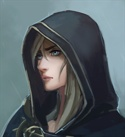

2. Зеркало и Василиск
|
DungeonMaster
Valkorolessandra
14.03.2024 21:02 |
Погода испортилась окончательно и в начале седьмого пошел дождь. Благо до крова оставалось всего ничего и вскоре в вечерней мороси уже можно было различить огни довольно большого двухэтажного каменного строения.
 Навстречу вам с лаем выбежали три собаки. За зданием трактира обнаружилась пристроенная к нему конюшня. Выглянувший на шум парнишка, скрылся за дверью кухни и почти сразу оттуда вышел дядька лет пятидесяти, который деловито принял мулов и лошадей и помахал, чтобы шли уже в дом. Крестьяне задержались, чтобы распрячь лошадей. Рыцарь окинул конюшню быстрым взглядом, видимо, удовлетворился увиденным и, бросив дядьке монетку, вслед за остальными пошел внутрь. Несколько замшелых каменных ступеней и вы, наконец, в тепле и сухости. На дверной колокольчик выбежал хозяин, немедленно рассыпавшийся в любезностях перед новоприбывшими. Монаха усадили поближе к огню, рыцарю предложили вина, наемнику пива, а даму спросили, какую комнату она пожелает. Впрочем, очень скоро выяснилось, что кроме пива, вина и хлеба с сыром пока что ничего нет – народу неожиданно много, все подъели, а фасоль он только-только поставил. Придется ждать. В полутемном зале действительно было людно. В основном сюда набились крестьяне, такие же как Филипп и Кудо, ваши попутчики. А дальний столик у камина заняла разномастная компания каких-то подозрительных наемников. И, судя по обилию свечных огарков, сидят они там уже давно. |
|
Эрика Райт
legol
 15.03.2024 02:45 |
Оказавшись в трактире, Эрика быстрым взглядом обежала всех присутствующих, оценивая источники возможных проблем и лишь ненадолго задержавшись на подозрительной компании наёмников.
- Тот, что с вороном, должно быть, волшебник, - прошептала она Мартину. На секунду она задумалась о Скае. Было жаль оставлять ястреба под дождём. Но ей не хотелось бросаться в глаза также, как тот наёмник с чёрной птицей. Заодно Скай предупредит, если к трактиру прибудут новые посетители. Она прислушалась, стараясь уловить говор присутствующих. Мельком оценила объём выпитого. Если начнётся потасовка, рыцарь, не смотря на старую рану, обязательно ввяжется. И им, как попутчикам, придётся его поддержать. Хотя дочь торговца и могла позволить себе остаться в стороне. На вопрос хозяина трактира, Эрика попросила ключи от двухместной комнаты. - Дождёмся фасоли, - предложила она Мартину. Столик, за который сели их знакомые, выглядел слишком маленьким, чтоб расположиться за ним вчетвером. Потому девушка решила не стеснять последователей Святого Катберта, и выбрала стол рядом с большой крестьянской компанией. Все и так видели, что они зашли вместе.
Результат броска 1D20+5: 24 - "Search".
Результат броска 1D20: 3 - "Sence Motive". Результат броска 1D20+5: 14 - "Listen". |
|
Мартин
msh
 16.03.2024 17:53
16.03.2024 17:53 |
Сэр Григор ошибся не намного - места на постоялом дворе действительно были, не оказалось еды. Ну что ж, дело поправимое, тем более ждать по словам трактирщика надо было не очень долго.
Из посетителей наибольшее внимание Мартина привлекли сидевшие в дальнем углу наемники. - Скажи-ка, любезнейший, а что за люди там в углу сидят? - не очень громко поинтересовался солдат у тарктирщика. |
|
DungeonMaster
Valkorolessandra
17.03.2024 00:27 |
Юркий трактирщик, представившийся Гансом, немедленно прибежал с обещанным. Сначала, конечно, поспешил к рыцарю и священнику. Потом настала и ваша очередь.
– Ну и денёк, ну денёк. – Тараторил он, выставляя на стол, кажется, все, что нашлось в кладовой. – То пусто, то густо. Все подмели, госпожа, все. – Он выпрямился и, уперев руки в бока, неодобрительно посмотрел на фермеров. – Если они все на ночь останутся, тут яблоку негде будет упасть. – Эти? – В ответ на вопрос Мартина Ганс уставился на наемников, машинально вытирая руки о фартук. – Первый раз вижу. Сидят тут с обеда… Пришлые, – доверительно сообщил он. Кажется, заявившись сюда вместе с рыцарем, вы автоматически вошли в число благонадежных людей. В отличие от подозрительной четверки. – Но мне-то что. Пока платят и не бузят, пусть себе сидят. – С этими словами он умчался на кухню, откуда донесся металлический кастрюльный грохот и визгливый женский окрик "Рован! Дрова, твою мать, где?" Через пару минут из кухни неторопливо вышла женщина средних лет, чей отрешенный вид ярко контрастировал с беготней трактирщика. С целой горой кружек она продефилировала через зал к столу крестьян, затихших при ее приближении, и выдала им пива. После того как она также неспешно ушла обратно на кухню, у вас уже не осталось сомнений в том, что, щедро одарив блаженной безмятежностью, боги забыли выдать ей хоть сколько-нибудь ума. Устроившийся у огня с кружкой подогретого вина, монах, кажется, уснул. Рыцарь, как подметил опытный взгляд Мартина, уложив на стол перчатки и булаву, сел так, чтобы видеть зал и входную дверь. Годы теории, а главное, практики, не прошли для Эрики бесследно – разговоры с подставными и случайными людьми, присутствия на допросах, похожие на игры тренировки с поиском лгуна. Как бы напряжена ни была внешне расслабленная девушка, уставшая, озябшая и заброшенная почти одна в чужую враждебную страну, она сразу же подметила, что в Василиске чего-то не хватает. Расслабленной атмосферы, вот чего. Ни выкриков, ни хохота, ни даже ругани. Видимо, крестьяне маловато пили. Или обсуждали что-то интересное, но приватное. Скай почувствовал слабый интерес и почти сразу после этого звякнул колокольчик. В зал вошли Филипп и Кудо, да не одни, а с еще одним парнем, который немедленно присоединился к фермерам за угловым столом. Ваши же знакомцы помялись у дверей, да подсели за соседний столик. Но держались особняком. А через полчаса пошел снег. Мелкий, мокрый и противный. И вскоре трактирщик, принес, наконец горячее. Карту добавила.
У вас ключи от северо-западного двухместного люкса. Из обитателей таверны, помимо трактирщика, уже виденного вами парня и конюха, обозначились две женщины, одна горластая, вторая слабоумная. Монах спит. Рыцарь бдит. Крестьяне треплются, но как-то тихо. Причем не похоже, что они затихли при вашем появлении. В зал вошли ваши попутчики и еще один фермер. Без особого приказа Скай кружить под дождем и снегом не станет, а устроится под козырьком крыши над входом. К вам за столик никто не подсел, так что вы можете поговорить без опаски быть услышанными. |
|
Мартин
msh
17.03.2024 19:37 |
Крестьяне и искатели приключений. Хм... Вполне может оказаться. что опасность представляют как раз те, на кого сразу и не подумаешь...
- Слушай, как бы странно это не прозвучало, - обратился Мартин к своей спутнице, - А крестьяне - не наши, а те, что здесь уже были, - могут оказаться не простыми. |
|
Эрика Райт
legol
18.03.2024 08:03 |
- Ты прав, - согласилась Эрика. - Слишком уж напряжённо тут. И трактирщик подметил, что не ожидал такого наплыва посетителей.
Девушка ещё раз окинула взглядом холл. Она приветливо улыбнулась бдящему рыцарю, встретившись с ним взглядом. - Но и наёмники меня настораживают, - негромко продолжила она. - Что они тут полдня уже делают? Ждут кого-то? Проматывают гонорар? Не похоже, чтоб они куда-то спешили. Эрика поковыряла вилкой фасоль. Только сейчас она осознала, насколько сильно проголодалась. Но пока не торопилась начать трапезу. - Что бы тут не затевалось, - подытожила девушка, - это нас не касается. А потому предлагаю уйти наверх сразу, как закончим с ужином. |
|
DungeonMaster
Valkorolessandra
18.03.2024 23:15 |
За время ужина, колокольчик звякнул еще не раз. И не два. И вскоре ближайший к выходу стол тоже оказался оккупирован фермерами. Сидели люди, ели, отдыхали после тяжелого дня, казалось бы, что тут такого. Но то чувство, которое обостряется иногда у особо опытных шпионов, подсказывало, что что-то тут не чисто. Решив не спорить с ним, бывалые агенты шустро разделались с ужином и поспешили наверх. В конце концов, если крестьяне ищут тут проблем, пусть они их и находят. Лестница на второй этаж была снаружи, что казалось страшно не практичным при такой погоде. Место они тут что ли экономят. Единственным, кого это радовало, был Скай, который уже изрядно подмерз, ютясь под крышей и питал смутные надежды на то, что когда-нибудь его, наконец, пустят в тепло. Но не тут-то было. Навстречу идущему впереди Мартину распахнулась входная дверь и в зал вошел человек в броне и засыпанном снегом синем плаще городской стражи Флавии, а за ним еще трое в такой же одежде. Впереди идущий дежурно улыбнулся наемнику и жестом предложил ему вернуться в зал, трое его спутников, держа под плащами направленные вниз небольшие заряженные арбалеты, непринужденно распределились вдоль стены, наблюдая за постояльцами. В повисшей тишине вошедший первым отряхнул плащ, осматривая присутствующих и неспеша вытащил из-под перевязи пергамент. Развернув его, но не глядя в текст, а продолжая поверх бумаги наблюдать за залом, капитан зачитал:
– Слушайте и не говорите, что не слышали. Именем короля и по велению его. Всем жителям Морландии, кроме дворянского сословия, вольнонаемной охраны, а также охотников, егерей, стражников, гонцов и прочего люда, на службе короны с оружием в руках стоящего, строжайше запрещается ношение, равно как и хранение, а также продажа либо покупка оружия и амуниции. Нарушителей же должно арестовать немедля и наказать по всей строгости закона. Во время паузы стали слышны быстрые казённые шаги и хлопанье дверей на втором этаже. Кажется, люди в синих плащах проникли и туда. Стоит отметить, что, не смотря на затишье, никого особо приход стражи не удивил. А текст бумаги так и вовсе тут наизусть все знали. – Также нам стало известно, что в этом районе были замечены представители так называемой и королевским указом запрещенной Фермерской Народной Армии. Я, капитан городской стражи Крайсбурга, Джефри Райан, заранее прошу прощения у присутствующих, но мы вынуждены провести опрос, а при необходимости, и обыск всех находящихся на постоялом дворе. – Повернувшись к обеспокоенному трактирщику, капитан добавил скороговоркой: – Включая вас, Ганс, прости, такая служба. С тем он повернулся к фермерам у крайнего стола и попросил их освободить его. Парни резво встали и свалили, подсев к остальным, а также за ваш столик. Подвинув стол, капитан выложил на него ручной многозарядный арбалет, а так же письменные принадлежности. Снимая перчатки и вешая на стул мокрый плащ, он с ироничным поклоном добавил: – Прошу подходить по одному. Надеюсь, это не займет много времени и вскоре вы сможете наслаждаться элем без нашего назойливого присутствия. За время ужина в зал по одному, по двое заходят еще четыре фермера.
Около восьми, как раз когда вы закончили ужин и собирались пойти наверх, в трактир заявилась стража в лице капитана (кираса) и четырех гвардейцев (кольчуги), вооруженных мечами и ручными многозарядными арбалетами. После зачитывания известного всем указа капитан, упомянув некую запрещенную организацию, сообщил о необходимости опроса и, возможного обыска всех находящихся в здании. Я решила, что вы благоразумно не будете агриться на человека в униформе. Не будете ведь? Капитан Джефри Райан

|
|
Мартин
msh
19.03.2024 20:48 |
Да уж, поужинали... Впрочем, надеяться, что весь путь пройдет без сучка и задоринки было бы верхом легкомыслия.
- Не спеши, - на всякий случай притормозил Эрика Мартин, - пойдем после Григора с монахом. Возможно такая очередность даст им хоть небольшое, но преимущество. Хотя кто его знает. что им рыцарь расскажет. |
|
Эрика Райт
legol
19.03.2024 22:29 |
Эрика чуть заметно кивнула Мартину. Вслух же бодро произнесла, обращаясь к спутнику:
- Похоже, что-то интересненькое, - она с любопытством посмотрела на старшего из стражников. Затем огляделась, окинув взглядом фермеров, коих тут и вправду собралась небольшая армия, и отметив, что, пока они "уходили", их стол уже заняли. - Налей чего-нибудь не крепкого, раз уж мы тут задерживаемся, - обратилась она к трактирщику, устраиваясь у барной стойки так, чтобы было видно происходящее. - Часто у вас тут такое? Сохраняя праздно-заинтересованный вид, девушка наблюдала за всем залом, мысленно ругая Ская за невнимательность.
Результат броска 1D20: 3 - "SM на рыцаря и монаха".
Результат броска 1D20: 18 - "SM на толпу крестьян". Результат броска 1D20: 4 - "SM на наёмников за дальним столиком". Результат броска 1D20: 19 - "SM на трактирщика". Результат броска 1D20: 4 - "SM на бравых стражников". |
|
DungeonMaster
Valkorolessandra
20.03.2024 09:38 |
– Уууу да. Минутчк. – Трактирщик слегка подвис на просьбу госпожи Оулэнс и обернулся к хозяйке, впервые показавшейся в зале. – Ну что стоишь, зови всех. – Он ушел за стойку и скрылся под ней, кряхтя "служба у них". Из-под столешницы донеслись звуки чего-то передвигаемого, перемежаемые "какая еще армия народных голодранцев, прости-нас-Катберт…". – Вот. Радлер, сударыня. Почтишто последний. Извольте отведать. – И перед путешественниками материализовались две солидные кружки с легчайшим элем. – За счет заведения и в качестве компенсации за неудобствия, – он кивнул в сторону стражей и придвинулся поближе. – Ну как часто. Как банду накрыли, спокойно стало. Заходят иногда, чисто для проформы, указ зачитать, оружие… да больше на людей посмотреть прост.
Тем временем от камина послышалась возня со стороны подозрительной компании, спешно начавшей переругиваться и перетряхивать свои мешки и подсумки. А зал заполнился нестройным гулом робких перешептываний в фермерских кругах. Рыцарь же спокойно встал и с достоинством прошествовал к столу капитана, всем своим видом олицетворяя идею равенства всех перед законом. Судя по тому, как почтительно привстал стражник при его приближении, некоторые перед законом были особенно равны. На "допрос" сэра Григора ушло от силы пять минут. Стражника полностью удовлетворили предъявленные бумаги и ответы на несколько вопросов. Вскоре латник вернулся на место, оставив "равенство" висеть в воздухе, а к столу ушел монах. С ним капитан разговаривал минут двадцать, не меньше. Хотя создавалось впечатление, что святому отцу просто хотелось поболтать, а стражник был слишком вежлив, чтобы отказать ему в этой маленькой радости. За это время наемники успели окончательно переругаться. Судя по обрывкам фраз, они потеряли документы и теперь обвиняли друг друга, вновь и вновь роясь в вещах, которыми их стол был уже полностью завален. У крестьян же перспектива проверки энтузиазма не вызывала совсем. Они шептались и поглядывали то на прикидывающихся мебелью стражей, стоящих у стены, то на вас, то на наемников. И хотя большая часть взглядов были испуганными или тоскливыми, в некоторых без труда читалась решимость или даже угроза. Благословив напоследок стража, монах, наконец, вернулся на свое место у камина, попросив Ганса принести еще вина погорячее. По словам трактирщика стража тут иногда появляется, но просто как патруль, без таких вот замашек.
Рыцарь с монахом прошли проверку в свое удовольствие. Наемники, похоже, посеяли ксиву. Фермеры грустят сильно, а некоторые напряглись по самое немогу. Шаги наверху стихли. Стражи с арбалетами, распределившись вдоль стены, без угрозы наблюдают за залом. Прямо сейчас общаться с капитаном никто не рвется. |
|
Эрика Райт
legol
21.03.2024 08:22 |
Затянувшегося общения с монахом как раз хватило, чтобы Эрика неспеша допила свой радлер. Она была приятно удивлена такому подарку от заведения, благодарно кивнув трактирщику, когда принимала от него напиток.
- Ну что, наша очередь? - улыбнулась она Мартину, отставляя пустую кружку. Вставая, она взглянула на рыцаря: оценит ли он решимость недавней попутчицы? Затем уверенно направилась к столу капитана. - Рика Оулэнс, - с улыбкой представилась она стражнику. - Еду в Корсу по торговым делам отца. И с удовольствием отвечу на ваши вопросы. Девушка села напротив капитана. - Я впервые во Флавии, и не всё тут для меня привычно, - призналась она. - Но не могла не заметить, как тут спокойны и безопасны дороги. Мои попутчики упоминали, что уже года два минуло, как здесь изловили всех разбойников в округе. Но что это за фермерская армия, о которой вы говорили? Неужели на дорогах не так безопасно, как мне могло показаться? |
|
DungeonMaster
Valkorolessandra
21.03.2024 12:06 |
Монах, вернулся к огню и сейчас они с рыцарем тихо переговаривались. Судя по доносящимся репликам, речь шла о том, что идти наверх нет смысла – там тоже стражи, все равно в покое не оставят.
Капитан, хмуро поглядывавший на крестьян и наемников, был приятно удивлен, когда перед ним предстала решительная барышня. Куда-то сразу пропала озабоченность и дежурная маска, он приосанился и искренне улыбнулся в ответ. – Присаживайтесь, мисс Оулэнс, – подвинул к себе стопку бумаги и принялся записывать за собеседницей, одновременно отвечая на ее вопросы. – Местные бузотеры, госпожа. На дорогах от них опаснее не станет, а вот бардака прибавится. – Он оторвался от бумаг и продолжил, глядя Эрике в глаза: – А ваш отец, если позволите, кто будет? Откуда? – Норта? Если не трудно, припомните, когда вы прошли перевал? – Ага, и вы через Римонд или Сорз… ага. Он записал ответы и снова поймал зрительный контакт. – По дороге кого-то видели? Может быть кого-то подозрительного? Или может кто-то что-то рассказывал? О чем-то необычном… опасном, нет? – В Корсу? Надолго, если не секрет? Через Крайбург? А чем конкретно ваш отец торгует? Начинаем кидать блеф. Можно разом на все, можно дробить на темки. SM - по желанию.
От Мартина хочется узнать, где он находится и что делает пока Эрика общается. При желании может посоциалить с кем-то из присутствующих (кроме стражи, они откажутся и попросят вернуться в зал). Наемники шипят друг на друга. Фермеры настороженно шушукаются. |
|
Мартин
msh
21.03.2024 21:55 |
Кто же откажется выпить за счет заведения, особенно, если ждешь своей очереди...
- А эта народная армия - что такое? - поинтересовался у трактирщика, - Если на дорогах спокойно, чего их патрули по лесами и полям ищут? По мнению Мартина просто так гонять солдат и устраивать облавы никто бы не стал, значит какая-никакая, а угроза от этих крестьян наверняка была. Если они, конечно, действительно крестьяне. Как говорил бывший одно время капитаном их роты барон Тулендой после третьей бутылки: "назваться не значит быть". Ну, за помин души господина барона! Остается у стойки и общается с трактирщиком
|
|
Эрика Райт
legol
22.03.2024 00:58 |
Эрика охотно принялась давать показания, с энтузиазмом пересказывая всё, что видела по прибытию во Флавию. Она честно посчитала вслух, сколько дней минуло с тех пор, как они преодолели перевал, дважды ошибившись в расчётах, но поправившись и выдав, в итоге, правильный ответ. Затем в подробностях описала свои впечатления от Сорза, не забыв отметить разношёрстную архитектуру городка, качество дорог, внешний вид жителей, с размышлениями о том, похож ли каждый увиденный ею человек на подозрительных лиходеев или нет, и решив, что всё же все они не похожи. Затем описала местную кухню, а также рассказала о красотах окрестных предгорных пейзажей.
- А на что стоит обращать внимание в людях? - поинтересовалась она. - Кого опасаться? Для меня, если человек не вооружён, то и выглядит не опасно. Но ведь фермеры, наверно, так и выглядят? - Эрика слегка пожала плечами. - Кстати, дальше мы присоединились к группе охотников. Вот они были при оружии. Хотя тоже не выглядели подозрительными. Хорошие, простые ребята. Рассказывали нам о животных местных. Далее Эрика во всех подробностях пересказала всё, что узнала об охоте за эти дни. О пушном звере, силках и капканах. О историях из их жизни, которыми они делились. Несколько дней, проведённых в компании охотников, сложно было уместить в несколько минут разговора. Но девушка и не пыталась этого делать, стараясь припомнить и рассказать всё в подробностях. Заодно описала ребят, оценив впечатление, которое каждый из них у неё оставил, в итоге упомянув и то, как все эти охотничьи байки ей наскучили. Краем глаза она наблюдала за тем, как капитан стражи откладывает очередной исписанный лист, заодно оценивая, сколько чистой бумаги у него ещё осталось. Каждый раз, встречаясь с ним взглядом, она немного смущалась, но затем продолжала рассказывать всё с тем же энтузиазмом. - А затем мы встретили сэра Григора, сопровождающего монаха и двух крестьян. Вон тех, - Эрика указала назад. - Телегу с курами я издалека заприметила. Я столько кур и не видела никогда разом, представляете? Да вы, наверно, её во дворе видели, когда сюда подъезжали. А у второго мешки, то ли с овсом, то ли с ячменём. Тоже телега. Они это на рынок везут, в город. Ну... подозрительными они тоже не выглядели, - на миг задумавшись, добавила девушка. - В общем, обсудили кур, здоровье и тяготы дороги, рынок в Крайсбурге, да и город в целом. Так и добрались все вместе сюда, в "Зеркало и василиск". Кстати, не знаете, почему трактир так странно называется? Надо будет у хозяина спросить. В общем, как раз дождь моросить начал. А здесь народу столько оказалось. Ну вы и сами видите. Трактирщик сказал, что готовая еда закончилась. Пришлось ждать фасоль. Кстати, - спохватилась Эрика, - вы же с дороги только, не ели ничего. Наверно, фасоль ещё осталась, сэр... Райан, верно? - она снова улыбнулась. По прикидкам Эрики, она уже должна была сильно переговорить монаха. Благо, впечатлений у неё было достаточно, а профессиональная внимательность позволяла подмечать многие детали в пути, что сейчас и становилось пищей для разговора. - Да нет, не надолго, - задумалась девушка, отвечая на следующий вопрос. - Дня на два-три. Да, думаю, успею и город посмотреть. Вы же бывали в Корсе? Порекомендуете, куда сходить? Да, через Крайсбург. Тоже, должно быть, город интересный. Но, наверно, на обратном пути по нему погуляю. А Вы откуда родом? - Отец? - продолжила Эрика. - Ювелирными украшениями. Что-то вроде того, - она указала на брошку на своей одежде. - Я как раз везу несколько изделий партнёрам моего отца. У меня и письма от них есть. Ну и на продажу, что останется, в местные лавки. А, давайте покажу. Девушка извлекла одну из шкатулок. - Мне, вообще, отец не велел показывать украшения в дороге. Но вы же стража. Так что, думаю, не страшно. Так вот. Моя любимая вещь - аметист с золотом. На золотой цепочке. Вам нравятся ювелирные излелия?
Результат броска 1D20+5: 21 - "Bluff".
Результат броска 1D20: 8 - "SM" Эрика говорит очень много правды. Она излагает всю их дорогу по Флавии, не упомянув, разве что, о караване, с которым они преодолели перевал. При этом общается непринуждённо, открыто и охотно, описывая всё в мельчайших подробностях.
Думаю, всё это не меньше 40 минут заняло. И то, если капитан попытался где-то её осаживать. А то и больше часа. Если стражника заинтересовала ювелирка, то за первой шкатулкой последует вторая. А потом и третья. Это ещё на полчаса, как минимум. Хотя последнюю она уже не будет описывать так досконально, ограничившись только общими чертами. Письма Эрика покажет, если их потребуют. Разрешение на торговлю Норты тоже. Из неправды, пожалуй, тут только её легенда, про то, что она дочь торговца, и про его дела. Но этому она много времени не уделяет, сворачивая разговор в сторону ювелирки, моды и вкусов, где снова разворачивается, не говоря ничего, кроме правды :) Про сопровождающего её наёмника упоминает только то, что он есть. |
|
DungeonMaster
Valkorolessandra
22.03.2024 11:17 |
Брови трактирщика пришли в движение, явно сигнализируя о повышенном доверии к собеседнику, когда он, перегнувшись через стойку шепотом сообщил:
– Никакая это не армия. Пффф! Бездельники. Работать им лень, вот и скачут по холмам. И ведь не грабят. Неее, – теперь брови устремились вверх, когда их хозяин возвел очи горе, – независимости хотят. Вот от кого, от кого, я ему грю, ты хочешь не зависеть? От того, кто у тебя шерсть покупает? От всех, грит. – Он снова исчез под стойкой и вскоре появился с такой же кружкой. – Молодежь! Им бы все беситься, а люди, как вы сами изволили заметить, по лесам из-за них носятся. – Он махнул рукой и отнес кружку капитану, тихо поставил тому на стол и скрылся в двери за стойкой, откуда вскоре донесся приглушенный разговор с женщиной, видимо, хозяйкой. Через несколько минут оттуда снова вышла погруженная в свои мысли (а есть ли они там) дурочка и отнесла пиво на столы с крестьянами. Тем временем Рика взялась за капитана. Может быть тому казалось, что ситуация обратная, но нет, он жестоко ошибался. Начиналось все как сказка – пиво, тет-а-тет с красивой женщиной, и все это, буквально, исполнение должностных обязанностей. Но через четверть часа Джефри понял, что попал. Однако, его, похоже, действительно интересовали любые сведения о том, что делается в горах, а потому он слушал внимательно и лишь в крайних случаях мягко направлял собеседницу на путь осмысленного повествования. Записывал, впрочем, только факты о самой Рике и ее деле. Когда же дело дошло до шкатулок осоловевший стражник внезапно встрепенулся и, перехватив руку девушки резко сказал: – Не здесь! Ваш отец пр… В это же время Эрика почувствовала предупреждение от проснувшегося Ская, а двое стражей, те, что стояли ближе к дверям, переглядываясь, разошлись в стороны и подняли арбалеты. Секундой позже в зал с хохотом ввалились запорошенные снегом люди, они давятся от смеха, переспрашивая "и что, даже не посмотрел?". "Нет! деньги бросил и ушел!" – отвечает усатый черноволосый мужик, вошедший первым и отряхивающий снег с плаща. Капитан уже на ногах, а его арбалет смотрит в зал, хоть и поверх голов. Выражение лица предводителя ватаги немедленно меняется на "ой, блин*" и он резво ломится обратно в дверь, но не тут-то было – стражники уже закрыли ее, а в бок обладателю усов уперся арбалет. Двое остальных только плюнули и руки подняли. – Педро Мендоза! – с удовольствие произносит капитан. – Это ты удачно зашел. От стойки Мартину прекрасно видно не только всю сцену, но и реакцию крестьян – при упоминании имени по их рядам проносится шепот, поминают разбойников. Но уже через несколько секунд несколько парней поднимаются с места с решительным выражением лица. *жестоко отцензурировано
Фермерская армия – не бандитское, а скорее политическое образование. Кэп заваливает сенс и терпит Эрику добрые 40 минут. К моменту демонстрации товара (от которой стражник, похоже, хотел Эрику уберечь), в зал вваливается три человека. Первого узнает капитан. Похоже, всех троих сейчас заметут. А вот некоторые фермеры, кажется, неожиданно усмотрели в происходящем какую-то возможность для себя. Технически все это появление и реакция укладываются в один раунд. Карту обновила, фоточку положила. Педро Мендоза

|
|
Эрика Райт
legol
22.03.2024 19:39 |
Эрика поспешно спрятала шкатулку обратно в сумку, как только трое новоприбывших внесли разнообразие в будни стражи.
- Ко мне больше вопросов не будет? - разочарованно прозвучал её голос. Затем девушка бросила два быстрых взгляда: первый на Мартина, говоривший "Не ввязываемся, но будь готов", второй на рыцаря - просто оценить ситуацию. Если хоть кто-то из крестьян, что поднялись со своих мест, вмешается, начнётся хаос: наёмники, что так и не нашли документы, постараются прорваться к выходу, рыцарь ввяжется в потасовку на стороне закона, а прочие крестьяне, не понимая, что вообще происходит, и откуда ждать угрозу, начнут творить вообще невесть что, спасая свои жизни. Самим им тогда придётся спешно уходить из "Василиска", чтобы не оказаться втянутыми в историю, и снова ночевать в лесу. Как-то нужно разрядить обстановку. Потому Эрика, не вставая с места за капитанским столиком, просто развернулась к крестьянам. - Ничего себе, - начала она. - Никогда раньше не видела задержания. Действительно необычный вечер. Интересно, этот Мендоза разбойник какой-то? Не знаете? Затем встретилась вмиг посерьёзневшим взглядом со вставшим парнем. - Я думаю, они сами справятся, - негромко, но уверенно заметила девушка. - Не будем мешать, - добавила она и улыбнулась. |
|
Мартин
msh
22.03.2024 22:50 |
- Давно скачут? И вообще, много их? А то поедем дальше и наткнемся на ваших вольных стрелков, - продолжил беседу Мартин, благо времени у него было навалом - что-что, а заболтать кого угодно Эрика умела. Солдат даже с некоторым сочувствием посмотрел на стражника.
Появление трех незнакомцев прервало нежданный бенефис Эрики. - Он из них? - спросил Мартин у трактирщика, кивая в сторону усача, а сам приготовился вытаскивать подопечную из заварушки, которая могла начаться, если начнется буза. |
|
DungeonMaster
Valkorolessandra
23.03.2024 01:15 |
- Давно скачут? И вообще, много их? А то поедем дальше и наткнемся на ваших вольных стрелков
Ганс почесал в затылке: – Да поди уж лет… да всегда бузили, чего уж. А сейчас вот осмелели что-то. – Он прошелся взглядом по стражникам. – И ведь какой парадокс. Стоило Корсе извести тут грабителей, как повылезли лентяи и давай эту же Корсу и костерить по чем зря. Вы вот, человек военный, вот честно, а видели ли когда благодарность от простого люда за защиту, да за службу? Нет, мне вот просто интересно, по ту сторону гор таже голытьба наглая или может что иначе устроено? Мартин наконец разгадал секрет разговорчивости трактирщика – новый слушатель для старых истин. Все эти вопросы тут уже на сто миль окрест давно обмусолили, все кто мог, высказался. А тут, вишь, новенький. Причастность же усача к скачущим трактирщик отверг сразу же. – Что вы, – сдавленно зашептал он. – Это ж Мендоза. Последний уцелевший атаман, спаси нас Катберт. Не смотря на то, что вечер вдруг перестал быть томным, особо бурного развития ситуация не получила. На разбойников споро надели наручники и фермеры разочарованно сели на места. Впрочем, их демарш не остался незамеченным. Удивленно посмотрев на совершенно спокойную девушку, капитан пообещал: – Будут, мисс Оулэнс. Но чуть позже, подождите, пожалуйста в зале. – И, махнув одному из фермеров, совсем другим тоном велел: – Ты, иди сюда. После минутного колебания парень уселся на оставленное Эрикой место, однако допроса не последовало. Резко перегнувшись через стол, капитан схватил его за руку, задрал рукав и, встав толкнул назад к страже. Через пару минут парень оказался связанным в том же углу, куда усадили разбойников. Которые немедленно отпраздновали его появление глумливыми шуточками. Вскоре там же оказался второй, а третьего один из стражников увел за стойку и во внутренние помещения трактира. Фермеры хранили мрачное молчание, вопрос Эрики остался без ответа, а Филипп и Кудо с ужасом взирали на происходящее и, кажется, молились. Рыцарь выказал поразительную безучастность, а четверка наемников почти успешно делала вид, что их тут нет и никогда не было. Капитан, довольно осмотрев "улов", кажется, на время решил оставить крестьян в покое и наконец вспомнил о наемниках. Но когда он взглянул в их сторону, на глаза ему попался Мартин, которого он с дружелюбной улыбкой и пригласил за стол. – Вечер добрый. Извольте, имя, происхождение, звание, коли есть. Из Норты? Когда, с чем, надолго ль? Документы какие имеются? Ганс жаждет безобидной болтовни о политике.
Капитана что-то насторожило в Эрике. Двух крестьян арестовали. Оставив фермеров на потом, капитан докопался до Мартина. Кидаем блеф. |
|
Мартин
msh
23.03.2024 09:24 |
- Всяко бывало... - уклончиво ответил Мартин. И это действительно было так. Где-то их встречали хлебом с солью, а где-то смотрели волком и разве что в лицо не плевали...
Впрочем, милую беседу пришлось прекратить - капитан, арестовав полдюжины человек, обратил свое внимание на Мартин. Оставалось надеяться, что не с целью пополнения коллекции. - Здравия желаю. Тим Райвер, отставной сержант Беррингтонского пехотного полка. Из мещан. После демобилизации оказываю услуги в области безопасности. В настоящее время сопровождаю Рику Оулэнс в ее путешествии в Корсу. Вот контракт.
Результат броска 1D20: 17 - "Bluff ".
|
|
Эрика Райт
legol
23.03.2024 09:39 |
- Хорошо, - несколько обиженно вздохнула Эрика в ответ на просьбу капитана. - Буду ждать.
Затем она вернулась за стойку к Мартину, где молча наблюдала за задержанием троих фермеров. А когда наёмника вызвали на допрос, попросила его долго не задерживаться. Оставшись одна, девушка огляделась по сторонам, затем встала и направилась к столику рыцаря и монаха. - Позволите? - спросила Эрика, коснувшись спинки свободного стула. - Просто неуютно одной ждать, - призналась она. - Что здесь происходит, вы понимаете что-нибудь? |
|
DungeonMaster
Valkorolessandra
23.03.2024 23:01 |
Испытавшему на себе всю мощь общительности мисс Оулэнс капитану рапорт отставного сержанта был что манна небесная. Переписав данные, он чуть наклонился и, понизив голос, также поинтересовался обстановкой на дорогах и перевале. А в конце добавил, возвращая Мартину бумагу.
– Имейте в виду, без этого контракта у вас нет права на оружие. Что же касается… товара, который везет мисс Оулэнс. Мне все равно придется вас проверить. Но я имею право также на таможенный досмотр. Так что в результате вы получите бумагу, которая сильно сэкономит вам время, что в Крайсбурге, что в Корсе. Однако я не хотел бы этим заниматься этим здесь и сейчас. Подождите, пока я разберусь с остальными и запру этих красавцев до утра. – Он кивнул на угол с арестованными. – Не стоит светить… ну вы меня понимаете. – Разумеется, мадам. – Рыцарь без энтузиазма кивнул Эрике, ответив, кажется на оба вопроса разом. – После разгона головорезов уцелевшие мерзавцы укрылись в горах. Серьезной опасности они уже не представляют, но иногда случаются… инциденты. Мои поздравления капитану, это большая удача вот так подловить главаря. Если это действительно удача. Я слышал, Крайбургская стража не зря получает жалованье. Пока капитан на пониженных тонах обсуждал что-то с наемником, компания в углу, видимо, на что-то решилась и, едва, Мартин отошел от стола, обступила стражника. – Нну? – поинтересовался он, почему-то не разогнав их и не заставив подходить по одному. – Понимаете… по поручению… неделю… и вот… а когда… Кингсли, покажи… ожившие… быстро... – добрую четверть часа ребята мямлили и перешептывались, так что слышны были только отдельные слова. – Понимаете? – Нет. Не понимаю. Оружие на стойку. – Райан указал на парня с вороном. – Книгу. Конфискована для проверки. А теперь по одному. – И, разогнав остальных, оставил за столом только воина в панцире. После короткого разговора один из стражей увел его в помещение за стойкой, откуда парень вернулся взъерошенный, с доспехом в руках и еле сдерживаемой бранью. Плюхнувшись на место, он таки выругался и потребовал эля. Мартину капитан задает все те же вопросы, надеясь, видимо, на более профессиональный взгляд.
То, что он предлагает – однозначно не намек на взятку. Похоже, он просто не хочет открывать шкатулки с драгоценностями при посторонних и в напряженной обстановке. Так или иначе, вам обоим светит обыск, хотя не понятно, насколько тщательным он может быть. Мартин может перед уходом спросить что-то еще, если хочет. Следующие полчаса, если не дольше, мурыжат наемников. Потом принимаются за крестьян. |
|
Эрика Райт
legol
26.03.2024 19:18 |
- Значит не зря крестьяне боялись, - подытожила Эрика. - А эти трое, из фермеров. Они тоже головорезы?
Заметив, что Мартин освободился, девушка помахала ему рукой. - Благодарю вас за компанию, - улыбнулась она рыцарю и монаху, вставая из-за стола. - С вами и правда спокойнее. Дождавшись, пока капитан Райан отобьётся от незадачливых приключенцев, Эрика обратилась к офицеру: - Позволите, я подожду в своей комнате, на втором этаже? Кажется, вы не скоро освободитесь, - она устало окинула взглядом толпу ожидающих своей участи крестьян. - У нас северо-западная комната. Вы можете подняться сразу туда, как закончите. Покосившись на задержанных, она добавила, уже тише: - Вы думаете, что среди крестьян есть ещё бандиты? Похоже, вы были правы, что одёрнули меня. Спасибо. |
|
Мартин
msh
26.03.2024 20:48 |
- До Сорзы выдвинулись в составе колонны каравана. Во время движения встретили аналогичную колонну, движущуюся в противоположном направлении. В Норту то есть. В Сорзе колонна осталась, а мы продолжили движение в направлении Крайбург-Корса. В ту же сторону двигалась группа - порядка дюжины - охотников. Судя по повадкам серьезного боевого опыта не имеют. У реки они ушли в лес, а мы, соответственно, нет. Также были встречены две телеги крестьян, святой отец и сэр Григор, здесь присутствующие. Информация о разбойниках населением Сорзы и охотниками до нас не доводилась...
Окончив доклад, Мартин вернулся к стойке. - Знаешь, мы завтра рано утром опять в путь, так что кроме завтрака организуй нам с собой поесть что-нибудь, - обратился наемник к трактирщику, - Кто знает, когда удастся в следующий раз перекусить. Если уход в комнату капитан не согласует, то подкорректирую сообщение.
|
|
DungeonMaster
Valkorolessandra
26.03.2024 23:13 |
– Благодарю вас, сержант! – казалось, еще немного, и капитан отдаст честь.
Ганс же, понимающе кивнув Мартину, скрылся в двери за стойкой. На вопрос Эрики о втором этаже стражник устало улыбнулся. – Да, конечно! Отдыхайте. Не смею задерживать. А на ремарку о бандитах, задумавшись на секунду также вполголоса попросил: – Возможно... Кстати, вы не оставите мне тут вашего телохранителя на всякий случай? Больше для виду. Там на лестнице мои ребята дежурят, если что, зовите – прибегут. Доклад принят. Еда обещана. Про второй этаж ответила обоим. Время ближе к 23 уже.
|
|
Эрика Райт
legol
27.03.2024 07:56 |
- Хорошо, - согласилась Эрика.
Затем обратилась к наёмнику. - Тим, тогда вернись, как проводишь меня, ладно? Вроде, всё складывалось благополучно. Лестница на второй этаж располагалась на улице. А это значит, что девушку пропустят через входную дверь, что уже говорило о некоторой степени доверия к ним капитана. Она не сомневалась, что снаружи стража тоже есть. С другой стороны, пойманный атаман караульных не заметил, подходя к "Василиску". В любом случае, у неё будет возможность осмотреться. Оставалось лишь дождаться куда-то запропостившегося трактирщика, чтобы расплатиться за фасоль.
Результат броска 1D20: 20 - "SM на капитана: искренен или задумал чего?".
|
|
Мартин
msh
27.03.2024 21:20 |
Ну что же, проводить до комнаты, убедиться в безопасности места отдыха и вернуться в пункт принятия пищи для демонстрации флага. Все понятно.
Кстати, в проводах реально был смысл. Охрана на лестнице это, конечно, хорошо, но вдруг кто-то успел спрятаться в комнате? После свободно шастающих по тавернам разбойничьим атаманам Мартин ничему бы не удивился. - Я войду первым, - наемник открыл дверь и осмотрел комнату. Подошел к окну, проверил наличие ставней, затем открыл сундук и заглянул под кровати. - Чисто, можно заходить. Закрыв дверь за Эрикой, Мартин запер ее - не хватало нежданного визита кого-нибудь, ну хотя бы того же трактирщика - и негромко сказал: - Хотя осмотр может оказаться и не очень тщательным, лучше будет, если ЕГО с нами не будет, - солдат вытащил из-под доспехов пояс и достал маленькую шкатулку. - И дай мне какой-нибудь драгоценный камень, лучше самый дорогой, чтобы я спрятал его на себе. Так будет меньше вопросов, если обнаружат пояс. Или мы сами про него расскажем? Так сказать для укрепления доверия? |
|
Эрика Райт
legol
28.03.2024 08:19 |
- Ты прав, - кивнула Эрика, оказавшись в запертой комнате.
Она открыла одну из своих шкатулок. Недолго поперебирав украшения, девушка протянула наёмнику брошку с небольшим рубином. - Выполнена по специальному заказу, - лукаво усмехнулась она. - Будет грустно, если эта вещь не дойдёт до владельца. Так что не потеряй. Затем быстро спрятала коробочку с артефактом в своей сумке. - Таможенный досмотр может включать опись товара, - добавила она, открывая окно. - Потому брошку тоже нужно будет показать. Душно здесь. Эрика выглянула на улицу, оценивая, куда выходят окна, и нет ли никого под ними. Затем скинула на крышку сундука плащ и легла на застеленную кровать, подложив руки под голову. - Будь осторожен. И зови, если что интересное случится. Время тянулось долго. Когда Мартин вышел, Эрика продолжила лежать, немного выждая и позволяя привыкнуть к открытому окну возможных наблюдателей. Затем позвала Ская. Птице предстояло стать совой с куском мяса в лапах и укрыться в лесу до тех пор, пока путники снова не продолжат свой путь.
Результат броска 1D20+7: 21 - "Listen check"
План такой: Эрика зовёт Ская, вручает ему шкатулку с артефактом и поручает укрыться в лесу. Воссоединиться планируем завтра, когда продолжим дорогу (Эрика позовёт).
Чтобы птица не выглядела подозрительно в ночном небе со странной ношей, Эрика применяет заклинание disguise self, чтобы превратить ястреба в сову со шматком мяса в лапах. Засчёт разделения заклинаний она, как я понимаю, может провернуть такое с фамильяром. Заклинание продлится час. Этого должно хватить, чтобы затаиться. |
|
DungeonMaster
Valkorolessandra
28.03.2024 18:24 |
Капитан благодарно кивнул Эрике и бросил одному из стражников у двери:
– Стив, проводи наверх. И скажи, чтобы сэра Райвера пропустили обратно. – И вернулся к допросу. Ха, конечно Эрику насторожила эта попытка их разделить. С чего бы вдруг. Но, присмотревшись, девушка поняла, что никаких коварных планов у Райана нет. Он приехал сюда по делу, нашел тут гору работы и, обреченно засучив рукава, после дня, возможно, проведенного в седле, впрягся в привычную рутину. Одна радость – улов у двери. Интересно, может его за эту поимку повышение ждет. Или премия. А может просто минус одна головная боль в округе, и ему в том числе. С кухни донесся лязг посуды, похоже, Ганс решил, что не лишним будет еще что-нибудь сварить. Если уж держать у себя всю ночь стражу и арестантов, то пусть хотя бы сытые будут. Авось не погромят апартаменты-то. Тем временем Стив, козырнув начальству, распахнул перед Эрикой дверь и вышел вслед за Мартином. Снег перестал, но насыпало почти по колено. Ветер стих. Сугробы искрились в свете наддверного фонаря. Жаль, что завтра они, скорее всего, станут слякотью. Дойдя до угла, Стив крикнул напарнику, чтобы тот пропустил пару наверх, да выпустил потом солдата. Стражник, мерзнущий с фонарем на лестнице, зашел вместе с вами внутрь, вроде как для порядку, посмотреть, в какой комнате вы будете. Но, похоже, он просто воспользовался оказией чтобы погреться. После непродолжительной возни с переодеванием и перепрятыванием, Эрика осталась одна в стремительно остывающей комнате. Окошко выходило на крышу конюшни, в которой было неспокойно. Не была она рассчитана на такое количество постояльцев, часть из которых пришлось оставить на улице. Темнота и конек крыши мешали видеть, что происходит на заднем дворе, но топота и фырканья было предостаточно. Убедившись, что это просто лошади и ничего подозрительного не происходит, девушка позвала Ская, высматривая его на фоне ночного неба, подсвеченного снегом. Разбуженный и замерзший ястреб вломился в комнату и тут же попытался устроиться на ночевку на спинке кровати. Не тут-то было, дружок, труба зовет, стране нужны герои. Эрика уже достала футляр, как вдруг ее слуха достиг знакомый звук, обычно не предвещавший ничего хорошего – лязг спускового механизма и сразу за этим короткий стук. Там, внизу, за конюшней. Прислушавшись, за ржанием потревоженных лошадей, девушка различила ругань, а после громкий рык: – Ааааа, пёс!! А после – стук и грохот двери об стену. У таверны, как у любого строения с деревянными перекрытиями, была утомительная для жильцов звукопроницаемость. Все это время Эрика слышала бубнеж разговоров в зале этажом ниже, но теперь к ним присоединился шум в противоположном конце здания, в районе кухни, сопроводившийся двойным женским визгом, один из которых продолжился на улице, у колодца. И почти сразу же из зала донеслись крики и грохот. Получатели: Эрика Райт. Оставив Эрику, Мартин, хм, в некотором роде налегке, вернулся в зал, предусмотрительно медленно войдя в дверь. Не хватало еще схлопотать болт в живот от перенервничавшего стражника. Капитан, зевая, принялся за фермеров и, когда наемник прошел к стойке, как раз отпустил Кудо. Они с Филиппом задержались у стола Райана, спрашивая разрешения уйти наверх и кланяясь как болванчики, и вскоре бочком-бочком двинулись к выходу. "Ааарххх!!" – рявкнул на них Мендоза и заржал, чего крестьянам хватило с лихвой, они подскочили и бегом выбежали на улицу. Допрос шел своим чередом, но снова был грубо прерван. На этот раз истошным и, кажется, двойным женским визгом, донесшимся из кухни. Почти сразу после этого в пространство за стойкой спиной вперед, с криком "Берегись!" вбежал стражник, стреляя из арбалета и выхватывая меч. Вовремя, потому что из двери на него навалился, размахивая саблей, здоровенный заросший мужик и гвардеец еле успел отвести удар. В зале тоже скучно не было. Пока все смотрели на представление за стойкой, распахнулась, звякнув колокольчиком, входная дверь и внутрь ввалилось двое вооруженных кривыми клинками людей, кинувшихся на стражников с воплем "бей псов!!". И этот клич немедленно нашел отклик в сердцах томившихся в неизвестности крестьян. Повскакав с мест, они двинулись на стражу, доставая, кто нож, а кто и меч, и кто-то даже поддержал бандитов согласным "бей!". Еще громче орали в стане арестантов. "Что? Съел?!" – заливался смехом Мендоза, демонстрируя гнилые зубы. Остальные уже были на ногах и пытались помешать стражникам защищаться. Мартин было профессионалом настолько высокого класса, что повышение ему не светило никогда. Зачем? Лишиться такого оперативника? Да вы издеваетесь! Так или иначе, годы тренировки позволили подметить массу любопытных деталей. Например, сидевший у выходящего на лестницу окна крестьянин тоже подскочил, но смотрел при этом в окно, а не в зал. Капитан же еще при первом появлении своего человека за стойкой, схватил арбалет и, направив его в зал, пинком ноги опрокинул стол, оставив его между собой и прорывавшимися через мебель фермерами. Сэр Григор тоже встал и сейчас неторопливо надевал перчатки, угрожающе смотря на крестьян. Те же, в своем стремлении то ли навалять легавым, то ли просто прорваться к двери и уйти, старательно его фигуру обходили. Наемники у дальней стены тоже вскочили, но медлили в нерешительности. Трое медлили. Четвертый спешно натягивал доспех. Получатели: Мартин.
Результат броска 1D20+3: 14 - "Иня бандиты"
Результат броска 1D20+5: 14 - "Иня фермеры" Результат броска 1D20+6: 7 - "Иня стража" Результат броска 1D20+4: 15 - "Иня наемники" Результат броска 1D20+3: 19 - "Иня рыцаря и монаха" Инициатива.
Вы разделились, поэтому каждому свое описание происходящего. Начинаем слегка с затакта. У вас есть одно действие. Остальные его уже сделали. То есть после вашей заявки пойдут нормальные раунды. Вне зависимости от инициативы, сейчас первой ходит Эрика. Потому что ничто не должно помешать ей принять верное решение )) -------------------------------- Мартин 21 Рыцарь и монах 19 Наемники 15 Фермеры 14 Бандиты 14 Эрика 9 Стража 7 |
|
Эрика Райт
legol
28.03.2024 19:41 |
- Некстати, - тихо выругалась Эрика.
Вручив Скаю шкатулку, она прочитала заклинание, превращая птицу в ночную хищницу, а ношу - в шматок мяса. Что бы там ни случилось, самое важное сейчас - уберечь артефакт. - Потерпи немного, - успокаивала она птицу. - Сейчас на тебя вся надежда. Затем, выпустив сову на волю, девушка прикрыла окно, схватила плащ с посохом и поспешила к двери. Получатели: Эрика Райт.
Результат броска 1D20+2: 9 - "Инициатива".
Совсем вылетело из головы, что у Эрики кожаный доспех, который она, конечно же, сняла вместе с плащом и теперь надеть не успевает.
Сообщение мастеру:
В планах отпереть дверь и окликнуть стражу вопросом "Что случилось?" Дальше действовать по обстоятельствам. Не знаю, на сколько ей хватит раунда на всё это. |
|
Мартин
msh
28.03.2024 22:13 |
- Постараюсь, - усмехнулся Мартин, пряча украшение в освободившееся место, - Смотри не простудись...
В принципе чего-то подобного он и ожидал - главаря бандитов пришли отбивать. Единственное, что было не понятно: наблюдали ли за таверной или подмогу вызвал кто-от из местных. Впрочем, разборки с разбойниками занимали его лишь в той степени, насколько они могли помешать выполнению задания - а они могли. Недаром один из крестьян так посмотрел в окно, выходящее на лестницу. Надо на второй этаж и побыстрее! Туда вело три пути: через главную дверь, через окно и через кухню. В первом случае пришлось бы пробиваться через толпу разбойников со стражниками, во втором - можно было застрять в самый не подходящий момент, поэтому Мартин выбрал кухню. К тому же там был всего лишь один разбойник, если, конечно, за спиной здоровяка не прятался еще десяток. - Ну, ты, чего шумишь? - грозно спросил Мартин у громилы.
Результат броска 1D20+1: 21 - "Инициатива".
Результат броска 1D20+6: 25 - "Помощь стражнику" Достает оружие.
Движение в район I-10, если хватит запаса хода. |
|
DungeonMaster
Valkorolessandra
29.03.2024 00:06 |
2 этаж
Ни визг глупой бабы, ни ржание испуганных лошадей, не отвлекали Эрику от речитатива и вскоре верный Скай обернулся неприметной совушкой. Ух-ху, конечно, но летать в темноте проще не стало. Схватив увесистую коробку, сова выпорхнула в окно и скрылась в темноте. А внизу шел бой. Никаких сомнений. Эрика откинула щеколду и выглянула, прислушиваясь. По крайней мере, на втором этаже было тихо. – Что случилось? – нет ответа. Хотя… кажется, что-то стукнуло в дверь, ведущую на улицу. Получатели: Эрика Райт. 1 этаж Легко перемахнув стойку, Мартин оказался плечом к плечу со стражником, защищавшимся от громилы… И встал в очередь. Достать бандита мешал каменный дверной проем, так что пришлось предоставить действовать союзнику, а самому ждать удобного момента. И он настал. Лихо крутя саблей, дядька прижал стража спиной к стойке, выдвинувшись из проема и Мартин, подняв меч до уровня плеча, коротким тычком ударил мерзавца в лицо. Бандит отшатнулся, но этого движения хватило стражу чтобы по рукоять вогнать меч противнику под ребра снизу вверх. Тот посмотрел перед собой округлившимися глазами и, залив грудь хлынувшей изо рта кровью, беззвучно упал на пол. – Спасибо. Там еще один. – Предупредил наемника стражник, парнишка одних лет с Эрикой. Он запрыгнул на стойку и, угрожая связанным арестантам мечом, пошел к наседавшим на его товарищей фермерам. Что ж, предупрежден, значит вооружен. Получив минутную передышку, Мартин огляделся. Не решаясь подойти к вооруженном арбалетом и мечом капитану, фермеры с переменным успехом кидались в него ножами. Один из них прилетел рукоятью по голове. Пустяк, но и самочувствие не улучшилось, да и удар, предназначавшийся бандиту, цели своей не достиг. – Ха! Режь, псов, не жалей!! Гуляй, рванина! – подбадривал случайных (случайных ли?) союзников Мендоза, извиваясь ужом, чтобы перекинуть скованные наручниками руки вперед. Парень посообразительнее вскочил на стол и с размаху опустил меч (настоящий меч, а!) на плечо стража, с трудом сдерживавшего натиск уже троих противников. Доспех выдержал, страж тоже, но Мартин видел, что долго он не продержится. Впрочем, как и остальные. Пока еще они меткими ударами сдерживали толпу, не давая окружить себя со всех сторон, но долго так продолжаться не могло. Если наемники и рыцарь так и останутся в стороне, скоро таверна достанется бандитам. Получатели: Мартин.
Результат броска 3D20: 12 + 6 + 20 = 38 - "Фермеры 5,7,10 с +2".
Результат броска 3D20+2: 6 + 19 + 10 + 2 = 37 - "Фермер 10 крит?". ... Показать все броски ... Результат броска 3D8: 2 + 1 + 1 = 4 - "Стражи 1,2,3 урон с +2" Результат броска 2D8+2: 8 + 7 + 2 = 17 - "Страж 4 крит" Спакойно. 14d20 - осечка. Беру первые 4 цифры. И да, часть бросков задвоились.
Итоги 1 раунда: – Эрика выпустила птицу и вышла в коридор. – Мартин поучаствовал в hack & slash, оценил обстановку и предупрежден. 2 раунд начинает Мартин --------- Инициатива ----------- |
|
Мартин
msh
30.03.2024 21:21 |
Да, такими темпами стража долго не продержится... Особенно, если рыцарь еще минут десять будет надевать перчатки...
- Эй, парень, бросай оружие! На каторгу же пойдешь! - крикнул Мартин, крестьянину, что со спины атаковал стражника, только что освободившему солдату дорогу на кухню. Вряд ли дурак одумается, но, как говорится, все, что могу. По крайней мере на данный момент. Оказав содействие страже, Мартин бросился спасать следующего - на этот раз трактирщика. - Пригнись, старина, чтоб ненароком не задело! - бросил солдат пробегая мимо хозяина заведения, так не вовремя ставшего местом битвы, попутно снова готовя меч к атаке.
Результат броска 1D20+6: 16 - "Запугивание крестьянина №4".
Результат броска 1D20+6: 16 - "Атака бандита №8". Результат броска 1D8: 1 - "Урон". Движение на К10
|
|
DungeonMaster
Valkorolessandra
30.03.2024 22:34 |
1 этаж
Черт его знает, какие у рыцарей взаимоотношения со стражей, дружат они цехами или наоборот, но сэр Григор действительно никуда не торопился. В отличие от крестьянина, юркнувшего за стойку вслед за наемником. Если у него и было желание конфликтовать со стражей, теперь оно пропало окончательно и он чуть ли не ползком, стараясь не привлекать к себе внимания, пробирался за Мартином. Покинув зал, отставной сержант услышал перекрывающий гвалт боя голос капитана: – Кристиан! Контракт! Если ему кто что и ответил, голос потонул в лязге и криках, к тому же, оказавшись по ту сторону каменной стены, наемник понял, что все это время слышал хриплый бабий вой, доносящийся откуда-то со стороны кухни. Размышлять о природе его времени не было – оттуда же выскочил еще один бродяга, размахивавший саблей. Не тратя времени зря, Мартин рубанул хулигана, но меч завяз в тряпье, а дядька утер красный с холода нос и возмущенно крикнул: – Эт еще что за петух?! С дороги! Впрочем, судя по тому, что за спиной у него возник сбежавший по лестнице страж, вопрос был риторическим. Ганс же сидел за бочками, опасливо выглядывая из-за угла и причитал "Дженни-Дженни, ой, что же будет, Дженни моя, Дженни". Получатели: Мартин.
Результат броска 5D20: 1 + 9 + 2 + 7 + 18 = 37 - "фермеры 1,2,5,7,10 с +2".
Результат броска 3D20: 7 + 14 + 5 = 26 - "фермеры 6,9,8 с +6,+5,+1". Результат броска 4D20: 2 + 4 + 5 + 12 = 23 - "бандиты 4,5,8,6 с +3". Результат броска 1D4+1: 5 - "урон от 10-го" Результат броска 1D8+2: 10 - "урон от 9-го" 2 раунд
Мартин отвадил крестьянина от дурной привычки лезть на рожон и озадачил бандита на 3 хита (там +2 от силы). ход Эрики |
|
Эрика Райт
legol
01.04.2024 07:50 |
Накалённая обстановка-таки рванула, стоило Эрике покинуть первый этаж. Интуиция подсказывала девушке, что нужно бросать постоялый двор и уходить. Сейчас их бегства никто не хватится. Страже, что дежурила на втором этаже, сейчас было явно не до того. Но для начала нужно было осмотреться.
Эрика пробежала по коридору к двери, что вела на улицу. Прислушалась. Затем прочитала заклинание, сотворившее вокруг неё незримый щит. Получатели: Эрика Райт.
Результат броска 1D20+5: 19 - "Listen".
Сообщение мастеру:
30 футов к двери на лестницу, через которую она пришла. Как раз получается ровно до двери. Прислушивается. Колдует Shield. |
|
DungeonMaster
Valkorolessandra
02.04.2024 00:07 |
Мужичок веселый попался – прижался спиной к стене и умудрялся отбиваться от обоих. Да так, что от ударов профи только порезы оставались. – Пееедроо!! Ты живой еще?! – с подначкой проорал он в зал. – А то может зря стараемся? – Хы! Не дождетесь!! Получатели: Мартин. Стоило Эрике подойти к двери, как она дрогнула и частично приоткрылась, но буквально на пару дюймов. И снова захлопнулась. А после за ней кто-то взвыл и зарычал, обзывая кого-то шелудивым псом. Получатели: Эрика Райт.
Результат броска 7D20: 14 + 2 + 4 + 14 + 15 + 10 + 8 = 67 - "стража".
Результат броска 5D8: 5 + 5 + 2 + 1 + 3 = 16 - "стража урон". Противник Мартина получил, но стоит.
Эрика прислушалась и защитилась. 3 раунд начинает Мартин |
|
Мартин
msh
02.04.2024 18:45 |
Этого уговаривать было бесполезно, перед ним стоял матерый бандит, а не неподумавший о последствиях крестьянин. Поэтому Мартин снова пошел в атаку.
Результат броска 1D20+6: 11 - "Атака бандита".
Результат броска 1D8+2: 8 - "Урон". |
|
DungeonMaster
Valkorolessandra
02.04.2024 21:38 |
1 этаж, 3 раунд
Надолго мужичка не хватило, все-таки двое на одного так себе расклад. – Ай, йопта! Сдаюсь, начальник! Хорош уже! – заорал он, бросив саблю, и, зажимая рассеченный Мартином бок, прижался к стене. – Жаль, жаль, – выдохнул в усы стражник, оттащил бандита к лестнице и, приковал к опорному столбу. – Благодарю за содействие. – Кивнул он наемнику и пошел в зал. Впрочем, Мартин уже бежал к лестнице и едва успел поставить ногу на ступеньку, как первый этаж взорвался победным криком. Что там происходило не разобрать, но кто-то, похоже, громко радовался свежеобретенной свободе. [остановился на N6] Получатели: Мартин.
Результат броска 4D20: 6 + 19 + 14 + 1 = 40 - "фермеры".
Результат броска 2D8: 2 + 5 = 7 - "фермеры урон". Результат броска 3D20: 3 + 18 + 8 = 29 - "бандиты". Результат броска 1D6: 3 - "бандиты урон". Результат броска 2D20: 19 + 9 = 28 - "криты?". Результат броска 1D8: 7 - "урон за крит". Мартин видит цель, не видит препятствий и в следующем раунде добежит туда, куда хотел.
--------- Инициатива ----------- |
|
Эрика Райт
legol
03.04.2024 07:37 |
За дверью явно разворачивался бой.
Стражник, должно быть, перекрыл лестницу. И Эрике придётся ждать исхода сражения, чтобы спуститься вниз. Если, конечно, он не схлестнулся там с Мартином. Получатели: Эрика Райт. Эрика понимала, что мешкать было нельзя. Потому девушка рывком открыла дверь и тут же прижалась к стене слева от проёма, окинув быстрым взглядом разворачивающуюся картину сражения. Виду её предстал стражник, вполне успешно отражающий удары уже раненого незнакомого бандита. Быстро рассудив, что вмешиваться в эту схватку неразумно - совершенно ни к чему сейчас выдавать свои навыки - Эрика лишь коротко кивнула блюстителю порядка и поспешила обратно в комнату. Там она быстро собрала вещи, после чего посмотрела в окно, оценивая ситуацию. Получатели: Эрика Райт. |
|
Мартин
msh
03.04.2024 23:50 |
Кухню Мартин пробежал с той же скоростью, как и кладовку. Даже, наверное, быстрее - потому как никаких бандитов там, в отличие от предыдущего помещения, не оказалось.
Но это не важно... В общем, проскочив кухню, воин оказался на заснеженном дворе. Быстро оценив ситуацию на предмет наличия представителей бандформирований, Мартин побежал к колодцу - оттуда открывался неплохой обзор на крышу конюшни и окно выделенной им комнаты. Движение к колодцу. Оттуда оценивает ситуацию, а также возможность залезть на крышу.
|
|
DungeonMaster
Valkorolessandra
04.04.2024 00:09 |
В слабом свете фонаря Эрика увидела парня чуть старше себя, успешно оборонявшего площадку перед дверью от грязного оборванца с саблей. Когда дверь внезапно открылась, страж потянулся было левой рукой к арбалету, пристегнутому к поясу, но заметив Эрику, блокировал клинок противника, толкнул его от себя и попросил:
– Мэм, вернитесь в комнату. Не самый мудрый совет в сложившейся ситуации, надо признать, но, видимо, выдан он был машинально, по инструкции и без размышлений. Добежав до комнаты и выглянув в окно, Эрика увидела, что людей на лестнице трое – за обладателем сабли стоял еще кто-то, явно не в форме стражи. А Мартин, выбежав во двор и, рискуя поскользнуться, забравшись на стенку колодца, увидел Эрику, высунувшуюся в окно в попытке разглядеть, что творится на заднем дворе трактира.
Результат броска 4D20: 20 + 18 + 5 + 15 = 58 - "стража 5,4,2,кэп".
Результат броска 1D20: 12 - "крит?". ... Показать все броски ... Результат броска 4D20: 18 + 14 + 7 + 18 = 57 - "стража атака" Результат броска 4D8: 8 + 5 + 2 + 2 = 17 - "стража урон" Эрика рассмотрела трех человек на лестнице и Мартина на колодце.
Мартин в 4-м раунде выбежал на задний двор и разглядел Эрику в окне их комнаты. Можете помахать друг другу, а я пойду открою приваты. Идет 4 раунд (я дополню пост бросками ходов после Мартина). Ход Эрики. --------- Инициатива ----------- |
|
Эрика Райт
legol
04.04.2024 09:07 |
Кивнув Мартину (благо, с ним всё было в порядке), Эрика вернулась в комнату. Здесь она быстро извлекла верёвку из своих вещей, конец которой привязала к ножке кровати. Затем распахнула второе окно - то, что вело на крышу конюшни, - и сбросила вниз бухту. Несколькими сильными рывками проверила надёжность узла, отправила за окно сумку с вещами и перемахнула через раму следом.
Результат броска 1D20+2: 5 - "Use Rope".
Результат броска 1D20+2: 6 - "Climb" |
|
DungeonMaster
Valkorolessandra
04.04.2024 11:49 |
Рывок Мартина через кухню выключил, наконец, вой, источником которого была полоумная официантка, засевшая в углу под мойкой. Кажется, пробежавший мимо человек вывел ее из ступора и теперь она на четвереньках подползла к двери и выглядывала наружу.
Дверной проем кухни сейчас был единственным источником света и в нем Мартин различил трех лошадей у стены конюшни – тех, кому не хватило места внутри. Седла были свалены под навесом, прямо на дровах. Сначала сумка, а потом и Эрика мягко приземлились на западный скат крыши. Сумка плавно покатилась к краю и свалилась вниз. Эрика решила последовать за ней, но стоило ей повиснуть на веревке, как та вдруг сильно дернулась, обламывая доски навеса. Видать, кровать не устояла и прыгнула к окну. Девушку бросило вниз и ударило об стену, замерзшие пальцы не удержали веревку и Эрика упала в куст. Снега там, как назло не было. Зато рядом валялась сумка.
Результат броска 1D6: 4 - "урон от падения".
Мартин нашел трех чужих лошадей снаружи. Не нашел людей (кроме дурочки).
Эрика неудачно приземлилась в углу чуть левее окна, нашла свою сумку, получила 4 урона. Мартин начинает 5 раунд --------- Инициатива ----------- |
|
Мартин
msh
04.04.2024 21:32 |
- Спрячься, бой еще не закончился! - бросил Мартин растерявшейся женщине и выскочил во двор. Результаты обзора с учетом сложившихся обстоятельств были не самыми плохими - бандитов не был видно, зато солдат заметил Эрику. Впрочем на этом неплохие новости закончились - спуск напарницы оказался значительно более быстрым, чем задумывалось. Как бы не сломала себе что-нибудь. Мартин побежал к месту падения.
|
|
DungeonMaster
Valkorolessandra
04.04.2024 22:09 |
Дурочка доверчиво уставилась на наемника. Ее лицо озарило понимание и она спряталась от Мартина за дверным косяком.
Спрыгнув с колодца и оскальзываясь на снегу, Мартин добежал до угла конюшни, чтобы увидеть, как Эрика выпутывается из кустов сама и выдергивает оттуда сумку. На вид цела.
Результат броска 7D20: 17 + 17 + 3 + 10 + 20 + 13 + 7 = 87 - "фермеры".
Результат броска 3D20: 16 + 20 + 5 = 41 - "бандиты". ... Показать все броски ... Результат броска 2D20: 7 + 5 = 12 - "стража" Результат броска 2D8: 1 + 8 = 9 - "урон" Мартин достиг взаимопонимания с полоумной - ссылка
и добежал до северо-западного угла конюшни. 5-й раунд, ход Эрики. А я пока пороляю (да, ваши действия и то, что происходит в зале все еще тесно взаимосвязаны, не надейтесь). |
|
Эрика Райт
legol
05.04.2024 01:52 |
Эрика поморщилась, вставая. Вроде, цела. Только ушиблась. Она выбралась из кустов, попутно подобрав сумку. Что могло пойти не так? Похоже, переоценила свой вес - мрачно подумала она.
- Я в порядке, - на всякий случай уточнила она, когда Мартин молча возник рядом. - Что происходит? Оглядевшись на случай, если поблизости притаился кто-то из бандитов или стражи, девушка осторожно принялась огибать конюшню. - Кто эти налётчики? Сколько их? Какой расклад? - на ходу засыпала она вопросами Мартина. Девушка притормозила и посмотрела в глаза напарнику. - Нам нужно торопиться убираться отсюда? Или достаточно подождать, пока стража наведёт порядок? |
|
Мартин
msh
05.04.2024 19:56 |
- Бандиты решили отбить главаря, - ответил Мартин на вопрос напарницы, - А крестьяне решили воспользоваться случаем и поквитаться со стражей.
Тут было все понятно, а вот насчет второго вопроса... - Разбойников с десяток, крестьян дюжина, стражников раза в два меньше... - прикинул сержант, - Подавляющего преимущества нет ни у кого, но если мы вмешаемся, то скорее стража победит. - |
|
Эрика Райт
legol
08.04.2024 22:33 |
- Тогда давай вмешаемся, - немного подумав, решила Эрика. - Как туда лучше попасть? Через кухню? Или через главный вход? И кстати, чем заняты наёмники и рыцарь с монахом? - вопросы были заданы уже на ходу. Девушка поспешила обогнуть здание. Лестницу она минула уже бегом, лишь мельком взглянув на уцелевших бандитов и доблестно сражающегося стражника. А добежав до входа в трактир, остановилась и, ожидая отстающего Мартина, осторожно заглянула в окно.
Эрика бежит вокруг трактира. Достигнув входа, дожидается Мартина. Оценивает обстановку через окно.
|
|
Мартин
msh
08.04.2024 22:40 |
- Когда я уходил, рыцарь все еще надевал перчатки, а наемники раздумывали, - ответил Мартин, - А атаковать я думаю лучше через главный вход. Так сильнее будет эффект неожиданности.
Идем вмешиваться
|
|
DungeonMaster
Valkorolessandra
09.04.2024 09:29 |
После бурных, но результативных перешептываний за стеной конюшни, беглецы решили добраться до главного входа в Василиск и там уж действовать по обстоятельствам. Эрика уже оправилась после неудачного спуска и побежала мимо лестницы.
– Воу, воу, ты глянь, че делается! Девки бегают! – присвистнул оборванец. – Давай, уже, режь его быстрей. – Он сделал пару шагов вниз, но оставить приятеля один на один со стражником не решился. Огибая угол трактира, девушка успела заметить чью-то тень за противоположным углом. Но, кто бы там ни был, он тут же юркнул под прикрытие стены. Эрика же, добежав до окна и привстав на край фундамента, заглянула в зал и чуть не свалилась. Прямо перед окном скакал давешний черноусый атаман. Того, с кем он дрался, видно не было, но вскоре дело было сделано и атаман победно потряс мечом, а зал огласили победные крики, слышные даже через закрытую дверь и толстое мутное стекло. За ликующими бандитами девушка разглядела несколько тел и как минимум два из них были в униформе. Она уже собиралась спуститься со своей приступочки, как вдруг заметила, что разбойник вдруг присел и, жестом заставив остальных притихнуть, резко развернулся в сторону прохода на кухню.
Результат броска 1D8+2: 5 - "лечение".
Результат броска 4D20: 20 + 2 + 4 + 10 = 36 - "атака". Результат броска 4D20: 7 + 14 + 10 + 8 = 39 - "крит?". Результат броска 1D8+2: 6 - "урон". Результат броска 1D20: 17 - "выстрел". Результат броска 1D4: 2 - "урон". В раунде 5 Эрика добегает до окна и видит то, что там делается в раунде 6.
Мартин в раунде 6 добегает до боковой лестницы. Раунд 6, ход Эрики. Карта |
|
Эрика Райт
legol
09.04.2024 18:29 |
Воспользовавшись тем, что бандиты отвлеклись на что-то на кухне, Эрика ещё раз заглянула в окно. Увиденное её не обнадёжило. Похоже, на ногах оставался лишь стражник, что охранял вторую лестницу.
А потому девушка метнулась обратно к углу трактира, где с двумя головорезами всё ещё героически сражался парень в форме. На ходу вынимая волшебную палочку, она негромко выкрикнула так, чтобы напарник услышал: - Тим, поможем на лестнице. Лёгкая вспышка, и волшебная стрела поразила уже раненного мерзавца.
Результат броска 1D4+1: 3 - "magic missile".
Результат броска 1D20+2: 6 - "will save" Мув на А13.
Волшебная стрела в бандита 6. |
|
DungeonMaster
Valkorolessandra
09.04.2024 18:48 |
И тут оказалось, что мимо не только девки бегают. Но и доспешные вояки. Просто последние тяжеловаты и бегают медленнее. После "шпильки" Эрики бандит растерял весь кураж, а появление из-под лестницы Мартина заставило его переосмыслить ход событий и он начал медленно пятиться по лестнице вниз, глядя на наемника и его меч.
– Эй, мужик, ты чё, обиделся чё ли? Да я так, для компляменту, я ж не всерьез. Может я... того... а? Парень колеблется. С одной стороны не хочет то ли товарища бросать, то ли терять выгодное положение на лестнице, с другой – вроде как хочет дать дёру, но не знает, пропустишь ты его или в спину зарубишь.
Мартин начинает 7-й раунд. |
|
Мартин
msh
09.04.2024 21:55 |
Не оставлять врага за спиной - правильное решение. Но бандит был далеко, точнее высокого и сразу его было не достать. Ну да ладно, кроме меча есть еще и молот. Он хоть и легкий, но бьет ой как больно.
Результат броска 1D20+5: 19 - "Кидает молоток в бандита №6".
Результат броска 1D4+2: 5 - "Урон". Движение на А11
|
|
DungeonMaster
Valkorolessandra
09.04.2024 22:35 |
Зря парень колебался, надо было бежать сразу. Не отрывая взгляда от меча медленно приближавшегося наемника, он пропустил короткое резкое движение и, похоже, так и не увидел молотка, прилетевшего прямо в грудь. Сломал он там что или нет – уже не так важно, потому что от удара бандит опрокинулся назад и приложился затылком о ступени.
Подходя к лестнице, Мартин услышал доносящиеся из-за угла голоса и скрип входной двери. Он обернулся на шум и вдруг увидел как из-за угла на снег мягко упала Эрика.
Результат броска 2D20: 2 + 13 = 15 - "наемники".
Результат броска 1D4+1: 4 - "ММ". ... Показать все броски ... Результат броска 2D8: 8 + 4 = 12 - "урон" Результат броска 1D8+2: 6 - "урон" Мартин добил бандита, услышал голоса и открывающуюся входную дверь.
Увидел упавшую у самого угла здания Эрику. Мартин начинает 8 раунд. |
|
Эрика Райт
legol
10.04.2024 08:22 |
Скрипнула дверь. Эрика инстинктивно повернула голову на звук. И тут её глаза предательски стали смыкаться. Она пыталась сопротивляться, бороться, усилием воли отгоняя от себя сон. Но, видимо, сказалась дорога - много часов в седле, осторожных бесед и притворств, переживаний с допросом и предстоящим обыском. Да и когда она в последний раз нормально спала? Краем сознания девушка понимала, что это магия. Что Эрика слишком расслабилась, утратила бдительность, забыла, что, несмотря на запреты, и на этой земле есть волшебники. И теперь расплачивалась за это. Противиться чарам не оставалось уже никаких сил.
"Прости, Мартин, - подумала она. ‐ Похоже, я не справилась." Ноги подкосились, и девушка мягко осела на холодный снег. Последняя мысль, промелькнувшая у неё в голове, была о кровати, что осталась в так опрометчиво покинутой ею комнате на втором этаже. Затем сознание покинуло её. Эрика погрузилась в беспамятство. |
|
Мартин
msh
10.04.2024 21:54 |
Эрика упала... Мартин подавил в себе желание тут же броситься к своей спутнице - за углом скорее всего были те, кто ее уложил на снег, а подставившись под удар он вряд ли бы смог помочь девушке. Зато обезвредить бандита на лестнице и получить подкрепление в виде стражника - мог.
Мартин достал меч и бросился вверх по лестнице. Решить вопрос с окруженным разбойником не составило труда. - Давай вниз, там у вас совсем все плохо! - крикнул сержант освободившемуся стражнику.
Результат броска 1D20+8: 25 - "Мечом бандита".
Результат броска 1D8+2: 4 - "Урон". Подняться по лестнице, видимо на А8, и атаковать
|
|
DungeonMaster
Valkorolessandra
10.04.2024 22:39 |
Сержант полжизни отдавал приказы, а парнишка, видимо, уже привык их исполнять. Мимоходом кинув обеспокоенный взгляд на человека, который только что играючи разделался с двумя бандитами, да, к тому же, и в ситуации разбирался гораздо лучше, стражник кубарем скатился с лестницы и исчез за углом.
– О, сэр! Вы поможете? Где капитан? – Раздался его удивленный возглас. – Идемте, юноша, сами все увидите. – Ответил сэр Григор.
Результат броска 2D20: 12 + 16 = 28 - "наемники".
Результат броска 4D20: 17 + 7 + 1 + 8 = 33 - "фермеры". ... Показать все броски ... Результат броска 3D6: 3 + 5 + 1 = 9 - "урон" Результат броска 1D8+2: 10 - "урон" Эрика все еще спит
Мартин начинает 9 раунд |
|
Мартин
msh
11.04.2024 21:42 |
Стражник скрылся за углом и судя по разговорам остался жив.... Мартин спустился следом и осторожно выглянул из-за угла - кто знает, вдруг там засада и стражнику сейчас вонзят нож в спину.
Лежавшие на земле крестьяне наводили на мысль, что их уложило тем же заклинанием, что и Эрику. Стражника же не было видно - если его и тюкнули по голове - тело упало в дверной проем. - Приветствую, сэр Григор, содействие требуется? - поинтересовался Мартин выходя из-за угла.
Результат броска 1D20+1: 15 - "Проницательность"
Смотрит за угол.
|
|
DungeonMaster
Valkorolessandra
11.04.2024 22:07 |
На голос обернулись оба, рыцарь остался на месте, а монах, заглядывавший в окно, подался навстречу Мартину.
– Ах, добрый сэр, как вы вовремя. Треклятые наемники спелись с бандитами, а у сэра Григора, как назло, открылась рана. – Монах в отчаянии посмотрел на рыцаря. – Сэр, это же самоубийство! Что если они вас не послушают? Бога ради, молодой человек, может хоть вы их образумите! Ведь еще не поздно! Фигура рыцаря была отлично видна в свете огней трактира. Пока монах сокрушался, он покачнулся и приложил руку к правому боку, поставив ногу на ступеньку. Видать действительно раны беспокоят. Вот только на лице вместо сомнений и терзаний было скорее выжидание. Как перед броском. |
|
Мартин
msh
11.04.2024 22:20 |
- Сэр Григор, какое соотношение сил? - поинтересовался Мартин, приседая и начиная приводить в чувство Эрику. В любом случае - пойдет он внутрь или нет. оставлять напарницу без присмотра на снегу было нельзя.
|
|
Эрика Райт
legol
11.04.2024 23:54 |
Эрика нехотя открыла глаза, силясь понять, где она, и что вообще случилось. Но осознав, мгновенно оказалась на ногах. Заметила сэра Григора с монахом. Затем украдкой бросила взгляд назад, на лестницу, где валялись двое поверженных бандитов.
- Что происходит? - тихо поинтересовалась она у напарника. - Бой закончен? Встав за наёмника, девушка тихо прочитала заклинание, позволяющее обнаруживать любую магию, затем окинула взглядом присутствующих. Где-то здесь был волшебник. И, возможно, не один. Detect Magic
|
|
DungeonMaster
Valkorolessandra
12.04.2024 08:37 |
Эрика погрузилась в магические волны и увидела слабые следы недавно произнесенного заклинания, еще витавшие вокруг лежавших на земле крестьян, да и около нее тоже. Сильнее светилось что-то на обоих запястьях монаха, несколько мелких предметов, рассованных по его карманам и прикрепленных к поясу рыцаря, а также его булава. Он, кстати, как раз медленно и неуверенно взял ее в руку, все еще колеблясь, но после того как монах что-то тихо сказал ему, развернулся и, одним прыжком оказавшись перед наемником, молча ударил его, целя в голову. Мартин в последний момент отшатнулся, подняв меч, и тяжелое оружие лишь чиркнуло по пластине доспеха, а гамбезон смягчил удар, иначе пришлось бы худо.
Тем временем монах захлопнул входную дверь, подперев ее невесть откуда взявшимся поленом.
Результат броска 2D20: 8 + 17 = 25 - "наемники".
Результат броска 6D20: 12 + 13 + 4 + 19 + 4 + 1 = 53 - "фермеры с бандитами". ... Показать все броски ... Результат броска 1D20: 9 - "атака". Результат броска 1D20: 7 - "атака рыцаря" Мартин вместо ответа на свой вопрос чуть не получил по голове.
Эрика насчитала несколько магических предметов в снаряжении монаха и рыцаря: браслеты и что-то в карманах у старика, а также булаву и что-то мелкое на поясе у вояки. Монах закрыл и заблокировал входную дверь. Стартует 10 раунд, вы ходите в любом порядке. Карта |
|
Эрика Райт
legol
12.04.2024 09:52 |
Ситуация приобретала неожиданный и крайне скверный оборот. Даже если сэр Григор оказался не тем, за кого себя выдавал, то как объяснить это страже? Да и монах, похоже, был не чужд магическому искусству. Их стремительная атака не дала девушке времени разобраться в магических аурах. Эрика лихорадочно соображала: зачем им потребовалось на них нападать? Неужели она с Мартином увидела что-то, что видеть им не стоило? Заклинание сна? Или что-то ещё?
- Тим, ты чего натворить успел? - широко раскрытыми глазами уставилась она на наёмника, пятясь при этом назад. Снова оказавшись за спиной соратника, она коснулась его наплечника и коротко произнесла заклинание Щита. - Сэр Григор, мы не враги вам, - поспешно проговорила она. - Это недоразумение. Я всё объясню.
Результат броска 1D20: 13 - "SM"
5-футовый на А11.
Щит на Мартина (+4АС на 10 раундов). Пытаемся понять, что происходит. |
|
Мартин
msh
12.04.2024 21:17 |
Можно было бы, конечно, сказать что Мартину рыцарь сразу не понравился, но это было бы неправдой. Ничего сержант не заметил. В смысле ничего необычного. А увернулся исключительно за счет опыта, как говорится, на рефлексах. Так же и ответил.
Результат броска 1D20+6: 12 - "Мечом по рыцарю".
Результат броска 1D8+2: 3 - "Урон". |
|
DungeonMaster
Valkorolessandra
12.04.2024 23:15 |
Ничего сэр Григор Эрике не ответил. Его намерения были очевидны, а движения быстры и точны, словно на тренировке. Меч Мартина раз за разом встречался то с булавой, то с броней и не находил бреши в защите противника. Зато ее нашел рыцарь. Мощный удар обрушился на бедро наемника и тому уже треск костей послышался, но навершие лишь высекло искру из тускло вспыхнувшей стальной пластины, отскочив в сторону. В этот раз мисс Оулэнс защитила своего телохранителя.
Результат броска 1D20+8: 19 - "атака рыцаря".
Эрика добавила Мартину защиты и не поняла, что происходит.
Мартин обменялся с рыцарем промахами. Если вдруг мы тут застрянем (а вроде не должны), промотаем сразу несколько раундов. Раунд 11, вы ходите в любом порядке. |
|
Эрика Райт
legol
12.04.2024 23:49 |
Поняв, что сэр Григор настроен решительно, и что её маленькая хитрость не принесёт никаких плодов, Эрика отступила ещё на шаг назад. В руках у неё снова возникла палочка.
- Сэр Григор, похоже, вы не тот, за кого себя выдаёте, - произнесла она, направляя палочку на рыцаря. - А значит, наш долг вас остановить. Лёгкая вспышка, и волшебная стрела поразила самозванца.
Результат броска 1D4+1: 3 - "Magic Missile".
Шаг на А10. Мисла в псевдорыцаря.
|
|
Мартин
msh
13.04.2024 07:34 |
А Мартину было уже не до разговоров. Шел бой и тут либо он одолеет сэра - если он, конечно, действительно был сэром - Григора, либо рыцарь - его. Меча снова и снова поднимался вверх, чтобы отбить удар или провести собственную атаку.
Результат броска 1D20+6: 9 - "Атакует Григора".
Результат броска 1D8+2: 6 - "Урон". |
|
DungeonMaster
Valkorolessandra
13.04.2024 12:59 |
И снова рыцарь достал наемника, не дав тому ни единого шанса. Магия Эрики добавила Мартину брони, но не уверенности. Григор был силен, быстр, а главное, молод. Каких-то 5-6 лет разницы, но если бой затянется, они могут стать решающими.
Толстое стекло окна, выходящего на лестницу, глушило любые звуки, так что когда у Эрики за спиной раздался грохот и звон, это стало полной неожиданностью. А за первым ударом последовал второй. Кажется, кто-то очень хотел выйти из трактира и не постеснялся разнести ради этого дальнее окно.
Результат броска 1D20+8: 19 - "атака рыцаря".
Результат броска 1D8+1: 7 - "хил". Потеря трех хитов сэра не впечатлила.
Мартин обменялся с ними промахами. Кто-то изнутри выносит дальнее окно, то, что ближе к конюшне. |
|
Мартин
msh
13.04.2024 18:12 |
Бой продолжался и, по правде говоря, - а себе надо всегда говорить правду - шел плохо. Для Мартина, естественно. Сержант понимал, что если ничего не поменять, то рыцарь скорее всего победит... А что,е сои попробовать фирменный финт капитана?
Результат броска 1D20+6: 16 - "Атака".
Результат броска 1D8+2: 6 - "Урон". Не такой уж Мартин и старый...
|
|
Эрика Райт
legol
13.04.2024 18:55 |
Эрика оглянулась и прикусила губу. Времени совсем не оставалось. Если здесь появятся бандиты или стража, придётся сражаться сразу против всех. Но одолеть сэра Григора быстро им вряд ли удастся. И что на него нашло только?
Девушка снова прочитала заклинание щита, на сей раз даровав защиту себе, и, перехватив посох поудобнее, сбежала вниз по ступенькам. Никто из мужчин не спешил одержать верх. А время было не на стороне нортийцев. Колдуем Щит на себя. Становимся слева от цифры 12. Отсюда должен быть хороший обзор и на окно, и на то, что за углом делается.
|
|
DungeonMaster
Valkorolessandra
13.04.2024 21:10 |
Похоже, все финты капитана во Флавии знают назубок. Более того, у них тут есть, чем на них ответить. На этот раз и магическая защита не спасла, а искры посыпались уже из глаз. Рыцарь же, вместо того чтобы развить успех, навалившись на ослепшего от боли сержанта, начал медленно обходить его, сдвигаясь по часовой стрелке и приближаясь к Эрике.
Вандалы, громящие трактир, своего, наконец, добились и из выбитого окна показался край дубовой лавки. Она тут же исчезла, а с подоконника в снег спрыгнул бандит и молча рванул вдоль стены, отдаляясь от трактира. Следом, уже более осторожно, вылез один из крестьян.
Результат броска 1D20+8: 24.
Результат броска 1D8+3: 8 - "урон". Мартин -8хп (23/31)
Эрика защитилась (17/21) Окно пало. Из трактира сбежал бандит, следом вылез крестьянин и собирается заняться тем же. Карта |
|
Мартин
msh
13.04.2024 21:41 |
- Сэр Григор, - Мартин попытался отвлечь рыцаря беседой, - А с чего вы решили на нас напасть?
Но разговоры разговорами, а схватка схваткой. Меч продолжил свое движение.
Результат броска 1D20+6: 16 - "Атака мечом по сэру Григору".
Результат броска 1D8+2: 4 - "Урон, если попал". Движение на А13.
Кстати, я +2 за окружение (если оно есть) не учел |
|
Эрика Райт
legol
13.04.2024 22:14 |
Эрика молча сместилась на шаг, обходя рыцаря. Посох медленно описал в воздухе дугу. Затем разведчица Норты перешла в атаку.
Результат броска 1D20+4: 13 - "Атака посохом раз".
Результат броска 1D20+4: 14 - "Атака посохом два". Смешаемся на клетку вниз, обеспечивая окружение. И атакуем.
|
|
DungeonMaster
Valkorolessandra
13.04.2024 22:46 |
Посох Эрики без толку стучал по броне паладина, но очередной удар, пришедшийся по шлему, все-таки отвлек его, дав Мартину шанс. Рыцарь отбил меч, но секундой раньше клинок все же успел побывать между пластинами доспеха. Пусть царапина, но хоть спеси сбить.
Не смотря на градом сыпавшиеся удары, на девушку сэр Григор внимания не обращал, так что она успела рассмотреть, что делалось у разбитого окна. А там царило оживление. Один за другим из трактира выбралось еще несколько человек, побежавших кто вдоль конюшни, а кто и напрямик к лесу. Следом за ними спрыгнул стражник и, увидев драку, поспешил к вам. – Сэр! Что здесь происходит?! Где вы были? – Он остановился в растерянности в нескольких шагах от Эрики. – Вы упустили бандитов, – холодно констатировал рыцарь, отступая на шаг назад, но не опуская оружия. – Но я задержал тех, кто их навел. Арестуйте этих людей. – Но сэр, этот человек… – Именем короля, я велел арестовать этих людей, страж! Выполняйте. Где ваш капитан? Стражник вопросительно посмотрел на Мартина, не зная, чего от него ждать. Приказ выполнять ему явно не хотелось, но и бунтовать он не решался. – Внутри, сэр, тяжело ранен. А, если бы не ваше бездействие, был бы... Благородный сэр ожег стражника таким взглядом, что тот осекся и со вздохом обратился к наемнику. – Ваш меч, сударь.
Результат броска 1D20+8: 17 - "атака рыцаря".
Григор теряет 4хп, мажет и отступает на шаг вниз.
Из окна выпрыгивают и сваливают кто куда человек 5. За ними приходит страж (тот, который бился с двумя бандитами на лестнице) и, получив приказ от рыцаря, предлагает Мартину сдаться добровольно. |
|
Эрика Райт
legol
13.04.2024 23:11 |
- Вы бесчестны и лицемерны, сэр Григор. Напали на нас ни с того ни с сего, без предупреждения и обвинения, - возмущённо выдохнула Эрика, опуская посох одним концом в землю. - Такими рыцари Святого Катберта не бывают.
Затем она обернулась к стражнику. - Пойдёмте, я помогу капитану Райану, - устало сказала девушка. Эрика сеет сомнение в благородности сэра Григора и предлагает не терять времени, а поспешить переложить ответственность на плечи капитана :)
|
|
Мартин
msh
14.04.2024 00:02 |
Вот это поворот... Впрочем, ничего удивительного не произошло - Мартину и прежде приходилось встречать таких людей. Обычно они ошивались при штабах, а если появлялись в третьей линии (в первой их увидеть можно было только на парадах и торжественных построениях) то лишь для того, чтобы отправить солдат в какую-нибудь самоубийственную атаку. Впрочем это не мешало им иметь целую россыпь боевых наград и быть на хорошем счету у вышестоящего начальства.
- На, держи, - сержант протянул стражнику меч, - Надеюсь тебе повезет и тебе не придется служить под его - Мартин кивнул в сторону "рыцаря" - началом. |
|
DungeonMaster
Valkorolessandra
14.04.2024 22:18 |
Кажется, последние слова Эрики все-таки что-то там задели. Хотя нельзя было с уверенностью сказать, что это "что-то" относилось к данной ситуации.
– После вас, мэм, – широким жестом сэр предложил Эрике войти в трактир. – И не забудьте сдать страже оружие. Нет, я не о палке. Стражник с благодарностью принял у Мартина меч и поспешил ко входу. Парень явно чувствовал себя не в своей тарелке и был бы чертовски рад заняться чем-нибудь более полезным. У ступеней он чуть не споткнулся о лежащих крестьян? – А эти почему здесь? Что это с ними? – Он обернулся к вам и рыцарю, ожидая объяснений, что не помешало ему пинком убрать бревно, подпиравшее вход и открыть дверь в трактир. Прямо у входа лежали тела двух бандитов. Рядом с ними, с помощью девушки-лучницы, пытался подняться стражник. Над ним стоял воин из наемников и подпоясывался мечом. Слева от двери маг убирал в сумку книгу. В глубине зала стражник снимал наручники с капитана. Когда дверь открылась, все обернулись. Рыцарь напоминает Эрике, что арестованы оба и что у нее тоже есть оружие.
Стражнику интересно, чего это тут крестьяне лежат, вроде живые, а вроде и не шевелятся. В зале бой окончен. Судя по тому, что видно в открытую дверь, на ногах, как минимум, трое наемников и еще один стражник. |
|
Эрика Райт
legol
15.04.2024 00:26 |
- А с какой стати вы мне указываете? - тут же взвилась Эрика на слова рыцаря. - Пока вы не объясните, с чего напали на нас без объяснения причины, почему не выдвинули обвинения и не предложили сдаться, проигнорировав все наши вопросы, полные недоумения, а просто попытались убить, я буду считать вас бандитом, выдающим себя за рыцаря Святого Катберта. Тем более, как я поняла, страже вы в бою не помогали. Так что я не вижу никаких причин следовать вашим требованиям.
Затем, потеряв всякий интерес к сэру Григору, девушка повернулась к стражнику: - Он говорит о волшебной палочке, которую я применила для защиты от него. Вы, наверно, помните, на лестнице я её тоже использовала. Если потребуете, я сдам её вам. А эти, - она опустила взгляд на лежащих крестьян, - попали под какое-то усыпляющее заклинание, похоже. Меня оно тоже усыпило. Да вы, наверно, и сами видели. Их можно разбудить. Но я совсем запуталась, кто здесь за кого.
Результат броска 1D20: 20 - "SM на Григора"
|
|
DungeonMaster
Valkorolessandra
15.04.2024 19:22 |
– Прикуси язык, нортийка, – процедил рыцарь сквозь зубы. И глядя на его побелевшее лицо, Эрика поняла, что нет, это не гнев. Это отрешенность человека, который будет выполнять приказ, чего бы ему это ни стоило – жизни, совести, чести – не важно.
Выслушав Эрику, стражник кинул озабоченный взгляд на наемника с книгой и обреченно вздохнул, принимая у нее палочку. – Давайте. Капитан разберется, – решив, что это все не его ума дело, парень поспешил внутрь, чтобы переложить проблемы на плечи командира. |
|
Мартин
msh
15.04.2024 19:30 |
Зайдя внутрь постоялого двора, Мартин окинул взглядом помещение и, заметив лежащего на полу капитана. сразу направился к нему.
- Помощь требуется? - поинтересовался он у стражника, - В смысле перевязать раны... Ясно было, что с задачей снять наручники стражник справится самостоятельно. Если стражник согласится, то может попытаться оказать первую помощь раненому.
|
|
DungeonMaster
Valkorolessandra
15.04.2024 19:49 |
Наемник при виде входящего в зал рыцаря вскинулся и даже начал с "ах ты ж п…", но получил такого пинка от стоявшего рядом волшебника, что заткнулся сразу же.
– Еще как! – немедленно откликнулся стражник на предложение Мартина и кивнул куда-то за стойку, – тут у нас лекарь обнаружился, Купер, он подскажет. – Сэр, тех, кого отпустили, разбежались, но тут у двери трое… спят. А эти двое арестованы по приказу господина рыцаря. –Встрял вошедший с вами стражник, сгрузил конфискованное добро на стол рядом с начальником и поспешил заняться более понятным делом – нужно было уложить раненых и оттащить в сторонку тех, кому уже не поможешь. Капитан, с трудом поднявшись, оглядел побоище и, выслушав доклад, удивленно посмотрел на Эрику и рыцаря. – Капитан, я уверен, что данное нападение спланировано Нортой с очевидной целью, сплотив ФНА и бандитов, ослабить регион, после чего ввести войска для "помощи" населению. – Озвучил, наконец, свои подозрения рыцарь. – А эти люди, если не организаторы, то как минимум, наблюдатели. Пришлось прервать их поспешный отъезд. Сэр Григор, снимая перчатки, подошел к капитану и, с его разрешения, прочитал над ним молитву, коснувшись ран на голове. Несколько секунд и только залитые кровью волосы, да пробитая кираса говорили о том, из какой мясорубки он только что выбрался. – Интересная версия. Благодарю, сэр Григор, дальше я сам, с вашего позволения. Мисс, будьте добры, присядьте на виду, я поговорю с вами чуть позже. – Махнув Эрике в сторону ближайшего стола, капитан переключился на более насущные, с его точки зрения, проблемы. – Спящих сначала связать, потом разбудить, – велел он стражнику, вошедшему вместе с вами. – Кристиан, возьми свет и кого покрепче, обойдите двор, нужно найти Ганса с Дженни и кто там у него еще, надеюсь, они просто разбежались. Мэт, иди с ними, при встрече с бандитами в бой не вступать, отступать к трактиру, – добавил он усатому стражнику, который выволакивал из-за стойки избитого, но еще живого главаря в наручниках с кляпом во рту. – А, и святой отец, надо его найти. Тоже, наверное, где-то прячется. Потом проверьте второй этаж. – А контракт? – немедленно поинтересовался Кристиан, оказавшийся магом-наемником. – В силе. – И компенсация зелий? – Да, Кристиан. – И лицензия на два года? – Да, Кристиан. – И налоговый… – Парень, не наглей. – Ладно. – Легко согласился маг и подозвал ворона. – Кинглси, пошли поищем трактирщика. Прихватив все еще кипевшего возмущением вояку и одного из стражников, Кристиан вышел из зала. Из-за стойки показался другой доспешный наемник с повисшим на нем раненым бандитом. Вместе с девушкой, они спешно организовывали рядом с очагом лазарет для раненых. Вскоре приведший вас стражник был послан на кухню организовывать горячую воду, а рыцарь и парнишка, на пару с Мартином зарубивший бандита в самом начале шумихи, ушли в подсобку, искать чем законопатить выбитое окно. Убедившись, что все при деле, капитан, наконец, вспомнил об иностранцах. – И? Как это понимать? Волшебную палочку у Эрики конфисковали.
Мартину никто не препятствует помочь лекарю с ранеными, но я оставила этот вопрос на ваше усмотрение. Паладин похилил капитана наложением рук и озвучил свою версию произошедшего. Оказалось, что у наемников с капитаном контракт и теперь двое вместе с одним из стражей пошли собирать разбежавшихся гражданских. Потери: 1 страж, 5 бандитов, 2 крестьян - убитыми. 2 стража, 1 бандит, Мендоза и 2 крестьянина - ранены. Часть в сознании. |
|
Мартин
msh
15.04.2024 20:18 |
В армии учат оказывать первую помощь - магия магией, но пока придет лекарь можно просто истечь кровью. Так что Мартин по мере сил помог перевязать раненых, а тем временем бледнолицый господин озвучил свои домыслы.
- Что именно, господин капитан? - попытался уточнить наемник у командира стражи, - Информации об организаторах нападения не имею. Про себя могу сказать, что оказал содействие страже в отражении налета - сначала на кухне, потом, убедившись в безопасности госпожи Оулэнс, на лестнице. Это могут подтвердить два ваших стражника (к счастью, оба они остались в живых). После чего направился к входу в таверну, чтобы перекрыть один из возможных путей отхода разбойников. Там встретил ... вот его - Мартин кивнул в сторону Григора - и предложил помощь. В ответ без объяснения причин подвергся нападению. Доклад закончил. |
|
Эрика Райт
legol
15.04.2024 20:34 |
Проигнорировав замечание рыцаря и передав стражнику палочку и кинжал, девушка вошла в трактир.
Быстрым шагом она дошла до капитана и успокоилась только, увидев его в сознании. - Возьмите, - протянула она две склянки стражнику, что помогал своему командиру. - Это зелья лечения. Думаю, сейчас они вам нужнее, чем мне. Затем, выслушав обличения рыцаря, Эрика кивнула Райану, сев по его просьбе за стол в ожидании. - Хотела бы я сама знать, - устало ответила она капитану, когда тот, раздав все распоряжения, обратился к ней с вопросом. - Признаться, когда сэр Григор ни с того ни с сего напал на нас, я решила, что он самозванец и заодно с бандитами. Но после того, как он исцелил Ваши раны, я не знаю, что и думать. Ведь это значит, что он и вправду паладин. |
|
DungeonMaster
Valkorolessandra
16.04.2024 08:54 |
Приняв доклад Мартина, капитан отпустил его заниматься ранеными. Сам же, оставив зелья, полученные от Эрики на столе, прошел в угол у входа, куда сложили тела.
– Разумеется паладин, – буднично ответил он, занимаясь довольно странными вещами. Ладно, карманы вывернул, но зачем он осматривал покойникам зубы, ногти, даже обувь снимал? – И пока он верен своим клятвам, может надеяться на то, что Катберт услышит его молитвы. У вас в Норте иначе? Впрочем, теологической дискуссии не вышло – в зал вернулся объект обсуждения и следующие полчаса вдвоем со стражником заколачивал оконный проем досками и брезентом. За это время в таверну вернулись Ганс, его жена, монах и конюх. Ганс сказал, что наемники все еще ищут Рована и Милку и остался в зале узнавать, что да как, а Дженелин с монахом отправились на кухню, отогреваться, готовить отвары для раненых и кофе для тех, кто поздоровее. Дурочка-Милка быстро нашлась под лестницей – услышала голос Дженелин и забыла, что прячется, а Рована мертвым принесли наемники. Они же нашли двух из трех собак. Судя по следам, им пустили зайца, отманив от трактира и зарубили. Парнишке-чернорабочему не повезло спрятаться в той же стороне, куда сбежали выпущенные бандиты, так что он стал их последней жертвой. На втором этаже обнаружились до смерти перепуганные Филипп и Кудо, все это время прятавшиеся под кроватями. Когда пересчитались и убедились в том, что все жители и постояльцы в сборе, капитан выдал Куперу зелья, добавив свое. Ганс нашел в закромах амбарный замок, его навесили на ставни в общей комнате и заперли там крестьян с разбойниками. Время было глубоко за полночь, все валились с ног, кофе уже не спасал. – Сэр Григор настаивает на аресте, – пожав плечами сообщил Райан нортийцам. – Спорный вопрос. Но, так или иначе, мне придется задержать вас до конца расследования. И мне почему-то кажется, мэм, что второй этаж и запертое окно вас не остановят. Давайте сойдемся на том, что вы оставите мне свои вещи и мистера Райвера. И можете занимать комнату наверху вместе с мисс Дэвис. Всех (кроме одной собаки) нашли и собрали в трактире.
Бузотеров заперли в большой комнате наверху. Эрике предлагают сдать вещи капитану и идти спать в компании девушки-рейнджера. Мартину предлагают остаться спать внизу. Маг, жрец, монах и жители трактира идут спать. Стража, воин-наемник и рыцарь организуют дежурство обоих этажей. Занимаясь ранеными, вы можете ретроспективно пообщаться с Купером (жрец-наемник) и кем-то из стражников. Технически тут происходит Long-Term Care |
|
Эрика Райт
legol
16.04.2024 18:50 |
Вся эта суета до жути надоела Эрике. Она очень устала и сильно хотела спать, но не могла вот так просто оставить всё как есть. Люди вокруг, как ни в чём не бывало, приводили в порядок себя и заведение, совершенно не обращая внимание на ту чудовищную несправедливость, что сейчас творилась рядом с ними. Обвинить в сговоре с какими-то бандитами тех, кто сражался вместе со стражей плечом к плечу, не требуя ничего взамен (в отличие от тех же наёмников). Обвинить лишь за то, что они нортийцы - что ж, такова Флавия, видимо. И даже паладины здесь не являются гарантами справедливости, и отличаются от разбойников лишь тем, что вынуждены придумывать себе оправдания, не заботясь, впрочем, об их убедительности. Пожалуй, с этой стороны бандиты выглядят даже честней. По крайней мере, они не притворяются праведниками. Похоже, эта страна действительно прогнила насквозь. И не заслуживала снисхождения.
- Капитан Райан, - Эрика постаралась погасить возмущение, но полностью скрыть недовольство ей не удалось. - Я благодарна Вам за заботу о моём комфорте. Но если Вы считаете нас... меня виновной в чём бы то ни было, то запирайте вместе с бандитами, с которыми мы сражались наравне с вами. Чем мы, по вашему, лучше? Понадеюсь на то, что они не мстительны. А если мстительны, что ж, вам же проще. Тем более, после выходки сэра Григора, я не знаю, кому вообще тут можно доверять. Она поставила на стол свою сумку. - Прошу, мои вещи. Дайте только отцовские драгоценности переписать. Надо было сделать это раньше. Но не сделала. По наивности, наверно. Хотя не важно уже. Просто забирайте, - дрогнувшим голосом закончила девушка и отвела взгляд, почувствовав, что ещё немного, и расплачется. Эрика в шаге от смены мировоззрения.
|
|
Мартин
msh
16.04.2024 21:47 |
Когда оказываешь помощь раненым, руки заняты, но это не мешает задавать вопросы.
- Может расскажете, что здесь конкретно произошло и как наш бравый рыцарь оказался снаружи в то время как бандиты внутри? - поинтересовался Мартин у непосредственных свидетелей произошедшего. Спорить с офицерами - дело бессмысленное, тем более с такими как Григор. Поэтому Мартин и не спорил, предоставив право вести переговоры, если, конечно, это можно было так назвать, своей напарнице. Расспрашивает о том, что произошло в таверне после его отхода.
|
|
DungeonMaster
Valkorolessandra
16.04.2024 23:07 |
Последний час не то, что стражники, но и наемники почти беспрекословно подчинялись капитану, и даже сэр рыцарь не перечил. И тут он налетел на нортийку. Некоторое время Джефри удивленно рассматривал ее, как будто пытаясь понять, кто же перед ним. А потом, видимо, пришел к выводу, что перегнул.
– Мэм, вы зря так драматизируете. – Он подошел ближе и продолжил вполголоса. – Если бы я считал вас виновной в том, о чем говорит Григор, у вас уже была бы лучшая комната, лучшие наручники и самая бодрая охрана. На ваше счастье я считаю, что это чушь. На ваше несчастье отмахнуться от обвинений сэра я не могу. И дело не в том, что его семья может четыре раза купить всю Крайбургскую стражу… Позвольте мне просветить вас относительно законов Флавии, они у нас с вами, видимо, сильно отличаются. Паладин Святого Катберта имеет право не только на арест, но и на суд, а также на исполнение приговора. К счастью, только в отсутствие представителей закона. И не приведи Катберт ему ошибиться, конечно. Это не значит, что он нагонит вас на тракте и попытается убить, для этого все же нужны свидетели и железные доказательства, но лучше бы вам уехать отсюда заставив его убедиться в полной несостоятельности этих обвинений. У меня уже есть некоторое представление о том, что тут произошло сегодня, завтра я собираюсь составить настолько полную картину, насколько это возможно. Я не знаю, какая муха его укусила и чего он добивается, но если вы снова сорветесь и приравняете его к бандитам, это только сыграет ему на руку. Поэтому пожалуйста, Рика, идите спать. Ваши вещи никто не будет трогать, я лишь хочу быть уверенным в том, что вы не станете лазать по веревкам. Обыск пройдет завтра, в присутствии вас и паладина нашего неуемного… Простите. Пока Купер и Элизабет вытаскивали стражников из покорёженных доспехов, Мартину с Джимом досталась работка попротивнее. Ибо от бандитов несло как от козлов, а фермеры голосили от любого прикосновения. Однако мистер Райвер времени даром не терял и потихоньку, слово за слово разговорил парня, даром что объект обсуждения ошивался неподалеку. – Как-как. А вот так. Когда эти навалились (да кончай ты уже орать, ща вырублю нахрен), кэп предложил тем ребятам контракт, – он кивнул за спину, где трудились жрец и охотница. – И все бы ничего, но… оружие-то у них конфисковано, да у двери свалено. Че, им голыми руками лезть. Не, ну на голытьбу-то можно, но… короче засс… эта, засомневались они. И решили выйти через кухню, зайти в парадный и отобрать свое, а там уж и помогать в полную силу. И я не знаю как, но сиятельство впереди всех оказалось. Да еще поп этот. (Не заткнешься, я попрошу дока, он тебе ногу отрежет. О? Все? Ну вот и молодец). А потом сначала Стивен упал, потом Руди достали и кэп приказал отступать. Мы пошли тогда за пацанами и тут оказалось, что дверь заперта снаружи. А сиятельства и след простыл. А ты гришь, как он снаружи оказался, ушел, мать его, по-акаронски. И дверь закрыл. А там на кухне не развернешься же, пока выбивать окно будем, нас запрут просто и все. Ну мы с Мэтом им говорим, давайте, выбирайтесь, мы прикроем. А Кинглси, тот, который всю дорогу доспех застегнуть не успевал, заметил саблю. Помнишь, мы с тобой хрыча напополам почти разделали в дверях, вот его сабля там и валялась. И он такой, ну нахер, всех убью, один останусь. А Купер грит, подождите, я вас подлатаю. Короче, собрались мы и вернулись. Да только капитана с Ежи уже завалили, не успели они к двери прорубиться. А подонки эти орут, праздновать собираются. Они-то думали, мы ноги сделали. Тут Мэт чета злой стал, сцепился с атаманом. Даже маг чего-то там запульнул в них. И когда Мендозу положили, они как-то сразу растерялись, все, кроме одного. Он ушлый оказался, грит, не выпустите нас, зарежу старшого вашего. И мы что-то решили, а и хер с ними, пусть бегут. Атаман-то у нас, нам бы рыцаря прижать, да задать пару вопросов. Вот. А Кинглсли этому умнику подробно объяснил, сколько его голова будет стоить, если он действительно офицера зарежет и как эти денежки у него, у Кингсли, в кармане звенеть будут. Пока орали друг на друга, мужики выяснили, что и входная дверь заперта. В итоге окно и вынесли. А пока эти тикали огородами, уже и вы заявились, и хрен этот Катбертов… (дальше неразборчиво). А поскольку Купер сразу капитана на ноги поставил, побазарить с сэром нам уже не дали. Тоска. Да. Зато вот, кросавчег! – парень ласково посмотрел на главаря. – Сколько за ним гонялись, а он сам пришел. На первый взгляд кажется, что как будто бы капитан на вашей стороне.
Мартин получил краткую сводку о прошедшем бое. В целом карты уже сыграны, осталось только очки подсчитать. Но вы, конечно, еще можете зайти куда-нибудь с каких-нибудь козырей. Полночи впереди. |
|
Эрика Райт
legol
17.04.2024 08:18 |
Слова офицера немного успокоили девушку. Возможно, у этой страны ещё не всё потеряно. Но её жизнь по-прежнему зависела от сумасшедшего рыцаря, с чем приходилось просто смириться.
- Спасибо, капитан Райан, - кивнула Эрика, всё ещё глядя куда-то в сторону. - Теперь мне немного лучше. Нам всем действительно стоит отдохнуть. Спокойной ночи, - она поднялась из-за стола. - Спокойной ночи, Тим, - махнула она рукой наёмнику. Затем, вспомнив, что не знает, куда идти, снова повернулась к капитану: - Кто-то из стражников проводит меня? Стараниями капитана Эрика сохраняет нейтральное мировоззрение :)
|
|
Мартин
msh
17.04.2024 22:10 |
Интересно, этот герой хоть одного бандита обезвредил или он только усыплять крестьян горазд? - подумал Мартин, услышав короткий, но эмоциональный рассказ о произошедшем в таверне. Хотя о крестьянах мог и монах побеспокоиться...
- Спокойной ночи, госпожа Оулэнс, - не остался в долгу Мартин. После некоторых раздумий - все-таки он находился под арестом - сержант подошел к представителю закона, чье присутствие только и спасало их с Эрикой от немедленного наказания. - Господин капитан, если нужно, могу усилить одну из смен, - предложил свою помощь Мартин, - Только, если можно, не с известной вам особой. |
|
DungeonMaster
Valkorolessandra
17.04.2024 23:19 |
Мисс Дэвис, откликавшаяся на Лизу, оказалась девушкой хмурой и не общительной. Даже грубоватой. Чем-то напомнив Эрике компанию охотников, с которыми они расстались всего пару дней назад. Хотя теперь кажется, что месяц прошел. Девушки заняли юго-восточную комнату, в которой, случись все иначе, должны были ночевать наемники, и всю ночь слышали тихие шаги дозорных, обходящих этаж.
– Спасибо, мастер Райвер, – усмехнулся капитан, – усилить вы можете, это уж я наслышан. И могу вас заверить, в случае нападения, оружие вы получите. А сейчас идите спать, свежая голова завтра важнее. – Он направился к лестнице, но остановился, чтобы добавить, – Известная вам особа несет стражу на втором этаже. А мисс Оулэнс делит комнату с мисс Дэвис, – он махнул рукой в юго-восточный угол здания, чтобы телохранитель точно знал, где дислоцирован объект. Двое стражников устроились на лавках поближе к очагу, двое заперли двери и разошлись по этажу. И в третьем часу ночи Зеркало и Василиск, наконец, погрузилась в сон. * * * Утром обнаружилось, что Ганс выдал капитану лучшую комнату – между хозяйской и спальней девушек – но тот превратил ее в кабинет и уже несколько часов занимался допросами. Филиппа и Кудо давно отпустили, но они ошивались в зале потому что боялись ехать одни, что не удивительно – из трактира вчера сбежало семь человек не самой приятной наружности. Стражники поцелее ушли к опушке – копать братскую могилу. Монах продолжал помогать на кухне, потому что кому-то нужно кормить всю эту ораву, а Дженелин слегла с лихорадкой. Эрику довольно скоро пригласили к капитану, где в присутствии еще одного стражника и рыцаря, ей пришлось открыть все шкатулки, вытащить из них все и вместе с остальными вещами разложить на столе. После того как шкатулки обстучали, проверяя на двойное дно и чуть только не обнюхали, в комнату позвали Мартина и мага-наемника. Кристиан прочитал заклинание обнаружения магии и долго осматривал вещи и самих нортийцев. Указав на доспехи и волшебную палочку, он заявил, что это все и поспешил свалить. Пока Эрика складывала все обратно, сэр Григор изучал ее бумаги. – Вы понимаете, что вам придется проверить этих людей, – вполголоса уточнил он у капитана, указывая на письма. – Разумеется, сэр, только не мне, а моим коллегам из Корсы. У них и жалование поболе. А мне сейчас нужно довезти до города семерых преступников. Чуть позже Мартин, вызванный для очередного подробного пересказа всего, что он делал и что видел предыдущим вечером, столкнулся в коридоре с вышедшим от капитана Кристианом. В комнате он заметил на столе набросок плана трактира и книгу мага. Райан трижды переспросил, что делала Милка и четыре – как упала Эрика и что делали рыцарь и монах перед дверью. После чего отпустил, наконец, мистера Райвера, который, уходя услышал "ни черта не понимаю". После чего Райан снова вызвал Кристиана. А потом снова Эрику, на этот раз для описания предыдущего вечера. И снова его интересовали спящие крестьяне. К полудню нортийцев и рыцаря собрали, наконец, в импровизированном кабинете. – При всем уважении, сэр, поводов задерживать иностранцев у меня нет. – Отчитался капитан. – Равно как и заниматься проверкой товара. Им все равно придется предоставить его таможенникам. – Вижу, – нехотя согласился сэр. – Миcс Оулэнс, мастер Райвер, приношу свои извинения. – И холодно добавил.– А вас, капитан, я вынужден предупредить, что подам рапорт, ибо по-прежнему считаю проверку недостаточной. И только наличие арестантов может послужить вам хоть каким-то оправданием. – Разумеется сэр, это ваша обязанность. Я, впрочем, тоже подам рапорт, – не менее холодно ответил Райан, а на недоуменный взгляд рыцаря ответил: – Вам удалось привлечь вольнонаемных и дать моим ребятам возможность перегруппироваться. Только благодаря этому здание отбили. Я и мои люди обязаны вам жизнью, сэр. Разумеется, я доложу об этом. Не сказать, чтобы эта неприкрытая лесть и, в сущности, ложь, достигла цели, но возникло ощущение, что эти два флавийца друг друга поняли. Так или иначе, рыцарь откланялся и вышел, а Райан, попросив вас задержаться, крикнул Руди, чтобы тот прислал к нему четверку. Когда наемники явились, капитан закрыл дверь. – Я вижу, вы ребятки достаточно умные, чтобы понимать, что благородный сэр повел себя вчера… странно. И, поскольку все вы, в той или иной степени, от его действий пострадали, имеете право знать. Против него у меня ничего нет. Напротив, у меня есть нападавший, чудом выживший после столкновения с ним. Сомнений никаких, получил он булавой, да так, что мама не горюй. Так что рыцарь таки принимал участие в бою в зале, не подкопаешься. То что он, закрыв дверь, вынудил вас вернуться и принять бой, любым офицером будет расценено как тактический ход, нацеленный на захват банды в полном составе. Мистер Райвер, думаю, понимает, как у начальства в таких случаях мозги работают и подтвердит, что я не ахинею несу. Так вот. Я не называл и не назову вам фамилию, чтобы у вас даже соблазна не было. Но должен предупредить, что молодой человек отнюдь не сирота. И если вы начнете распространяться о нем в дурном свете, вы неожиданно можете обрести… неприятные знакомства. – Капитан внезапно развернулся к воину, видимо, считая, что все-таки не все здесь подпадают под вышеозначенные критерии, – это ясно, Кингсли? – Да, сэр! – Молодец, вольно. Мисс Оулэнс, я бы советовал вам без лишних проволочек завершить ваши дела в Корсе и возвращаться домой. Шумиха вокруг Василиска вышла изрядная, а… знаете, поимка нортских шпионов – это, фактически, гарантированная карьера. – Он отчего-то вздохнул тяжело, – как минимум, пенсия. Не дразните людей зря. Так, это все, что я хотел сказать. – Он с коротким поклоном повернулся к нортийцам, – вы свободны, не смею задерживать. – И добавил, обращаясь к наемникам и потирая руки, – а вы будьте готовы выехать через час, есть у меня одна идея насчет тех двух крестьян и их телег. Вы можете задержаться и помочь капитану с расследованием. Тогда действуйте.
Или решить, что черт с ним, с сэром и спящими крестьянами, миссия важнее, и уехать. Тогда прощайтесь и я пишу финальный пост. При текущем раскладе скорость передвижения по тракту у вас самая высокая: рыцарь обременен монахом, а стража – пешими наемниками и арестантами. И Катбертом прошу, не забудьте Ская. |
|
Эрика Райт
legol
18.04.2024 09:12 |
- Благодарю Вас, капитан Райан, - в очередной раз кивнула офицеру Эрика. - Благодарю за Вашу честность и благородство. Мы немедля уедем отсюда сразу после завтрака. Не успели поесть с утра, - она виновато улыбнулась.
- Если позволите дать совет, - снова обратилась она к офицеру. - Проверьте монаха. Мне показалось, он слишком большое влияние на сэра Григора имеет. И я не удивлюсь, если именно он усыпил меня и крестьян. Он же был там и мог это сделать. Но это всё лишь мои домыслы, не поймите неправильно, - пожала плечами девушка. - Я не знаю, стал бы сэр Григор обманывать, спроси Вы у него напрямую. Но он может и сам не до конца понимать, что произошло. Она встала из-за стола. - Мы поедем быстро, - напоследок сказала Эрика. - Я была слишком неосторожна, чтобы наболтать вечером внизу лишнего про драгоценности. А вчера слишком много бандитов сумели убежать. Да и с сэром Григором на тракте снова повстречаться не хотелось бы. Попробуем выиграть в скорости. Ещё раз благодарю Вас. С этими словами девушка вышла из комнаты. Катберт не в почёте хD
В планах позавтракать, поседлаться и в путь. Ехать планирую быстро, выслав мулов в галоп, как только трактир скроется из виду. Ская вернём, отъехав где-то на полмили. Скачки закончим мили через две - перейдём на шаг, давая животным отдохнуть. Крайбург Эрика предложит объехать стороной. Ну это всё если Мартин не решит остаться :) |
|
Мартин
msh
18.04.2024 21:58 |
Этот вздох отчего-то навел Мартина на мысли, что капитан, в принципе, тоже не против заработать хорошую пенсию...
Ну а насчет говорить дурное о сэре рыцаре - тут можно было не сомневаться: до самой Норты Мартин на эту тему будет нем как рыба. - Разре... -начал было уставно отвечать сержант, но передумал и перешел на гражданский, - Счастливо оставаться, господин капитан. Надеюсь вы поймаете всех бандитов. Принять пищу и выдвинуться по маршруту
|
|
DungeonMaster
Valkorolessandra
18.04.2024 22:14 |
- Если позволите дать совет, - снова обратилась она к офицеру. - Проверьте монаха.
Сказав это, Эрика почти услышала щелчок, с которым что-то встало на место в перебинтованной голове капитана и он переглянулся с Кристианом. Кажется, в этой кутерьме, о святом отце он накрепко забыл, подозревая в колдовстве всех и каждого, включая блаженную посудомойку. Седлая мулов, вы увидели как стража бодро таскает мешки с овсом и клетки с курами в подсобки трактира. Кажется, Ганс получил провиант с доставкой, крестьяне – охрану, а гвардейцы средство перевозки арестантов. – Благодарю, мастер Райвер. Но пока не поймал – глядите в оба. |


Можно засесть в зале, можно пойти наверх, договорившись про комнаты. Они разные – от двухместных подороже до "общей", аж на 10 человек.
Картинки иллюстративные.